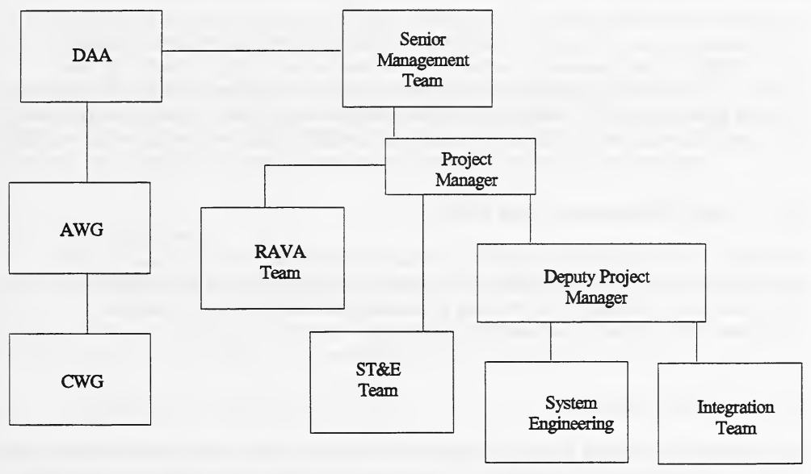

NIST IR 5540 日本語訳
英語タイトル : Multi-Agency Certification and Accreditation (C&A) Process: A Worked Example日本語タイトル : 複数機関の認証および認定（C&A）プロセス：実例
公開日 : 1994-12-01
原文URL : https://csrc.nist.gov/pubs/ir/5540/final
原本 PDF : https://doi.org/10.6028/NIST.IR.5540
訳文 : 有志による非公式の日本語訳（AI による翻訳とレビュー）。全 752 段落を翻訳済み（原文取得日 : 2026-11-16）
[要約] NIST IR 5540 は、複数機関による認証および認定（C&A）プロセスの実例を示す報告書で、米国麻薬取締局（DEA）が実施した Mountain Pass プロジェクトに基づいています。Mountain Pass は、複数機関の施設である El Paso Intelligence Center（EPIC）の情報システムと関連する通信を改善するプロジェクトで、DEA が認証および認定を行い、参加機関が認証プロセスの定義と支援を担い、実装されたセキュリティ機能を受け入れました。本文は、セキュリティエンジニアリング、システム開発における役割と責任、認証試験と認定の文書、得られた教訓の 5 つの節からなり、付録にセキュリティ要件マトリクス、認証および認定の依頼状の例、作業部会の憲章、了解覚書の例などを収めています。報告書は、他の連邦機関が複数機関の C&A に取り組む際の参考として、表や報告書、構成案、憲章の例を示し、認証の活動に重点を置いていると述べています。
NISTIR 5540
NISTIR 5540
Multi-Agency Certification and Accreditation (C&A) Process: A Worked Example
複数機関の認証および認定（C&A）プロセス: 実例
Ellen Flahavin NIST
Ellen Flahavin NIST
Annabelle Lee The MITRE Corporation
Annabelle Lee The MITRE Corporation
Dawn Wolcott The MITRE Corporation
Dawn Wolcott The MITRE Corporation
Sponsored by: Drug Enforcement Administration
後援: 麻薬取締局（Drug Enforcement Administration）
U.S. DEPARTMENT OF COMMERCE Technology Administration National Institute of Standards and Technology Gaithersburg, MD 20899
米国商務省 技術局 国立標準技術研究所（National Institute of Standards and Technology） Gaithersburg, MD 20899
NISTIR 5540
NISTIR 5540
Multi-Agency Certification and Accreditation (C&A) Process: A Worked Example
複数機関の認証および認定（C&A）プロセス: 実例
Ellen Flahavin NIST
Ellen Flahavin NIST
Annabelle Lee The MITRE Corporation
Annabelle Lee The MITRE Corporation
Dawn Wolcott The MITRE Corporation
Dawn Wolcott The MITRE Corporation
Sponsored by: Drug Enforcement Administration
後援: 麻薬取締局（Drug Enforcement Administration）
U.S. DEPARTMENT OF COMMERCE Technology Administration National Institute of Standards and Technology Gaithersburg, MD 20899
米国商務省 技術局 国立標準技術研究所（National Institute of Standards and Technology） Gaithersburg, MD 20899
December 1994
1994 年 12 月
U.S. DEPARTMENT OF COMMERCE Ronald H. Brown, Secretary TECHNOLOGY ADMINISTRATION Mary L. Good, Under Secretary for Technology NATIONAL INSTITUTE OF STANDARDS AND TECHNOLOGY Arati Prabhakar, Director
米国商務省 Ronald H. Brown 長官 技術局 Mary L. Good 技術担当次官 国立標準技術研究所（NIST） Arati Prabhakar 所長
FOREWORD
まえがき
This National Institute of Standards and Technology Interagency Report (NISTIR) presents a practical example on how to perform multi-agency certification and accreditation (C&A).
この国立標準技術研究所省庁間報告書（NISTIR）は、複数機関の認証および認定（C&A）をどのように実施するかについての実践的な例を示します。
The National Institute of Standards and Technology (NIST) makes no claim or endorsement of this C&A method. However, as this material may be of use to other organizations, NIST participated in producing and printing the document to make the lessons learned publicly available and to provide for broad dissemination of this federally sponsored work. This publication is part of a continuing effort to assist federal agencies in accordance with NIST’s mandate under the Computer Security Act of 1987.
国立標準技術研究所（NIST）は、この C&A の手法について、何らの主張も推奨も行いません。ただし、この資料は他の組織の役に立つ可能性があるため、NIST は、得られた教訓を公開し、連邦政府が後援したこの成果を広く普及させるために、本書の作成と印刷に参加しました。この刊行物は、1987 年コンピューターセキュリティ法（Computer Security Act of 1987）に基づく NIST の責務に沿って連邦機関を支援する継続的な取り組みの一部です。
NIST expresses its appreciation to the Drug Enforcement Administration (DEA) for their contributions to this report.
NIST は、本報告書への貢献に対し、麻薬取締局（DEA）に謝意を表します。
Questions regarding this publication should be addressed to the Computer Security Division, National Computer Systems Laboratory, Building 225, Room B221, National Institute of Standards and Technology, Gaithersburg, MD, 20899.
この刊行物に関する問い合わせは、Computer Security Division, National Computer Systems Laboratory, Building 225, Room B221, National Institute of Standards and Technology, Gaithersburg, MD, 20899 宛てにお寄せください。
Additional copies of this publication may be purchased through the National Technical Information Service, Springfield, VA, 22161. telephone: (703) 487-4650.
この刊行物の追加の写しは、National Technical Information Service, Springfield, VA, 22161 から購入できます。電話: (703) 487-4650。
•1. INTRODUCTION — 1
•1. はじめに — 1
•1.1 EPIC and the Mountain Pass Project — 1
•1.1 EPIC と Mountain Pass プロジェクト — 1
•1.2 Scope of the Mountain Pass Security Effort — 3
•1.2 Mountain Pass のセキュリティ作業の範囲 — 3
•1.3 Mountain Pass Development Methodology — 3
•1.3 Mountain Pass の開発手法 — 3
•2. SECURITY ENGINEERING — 5
•2. セキュリティエンジニアリング — 5
•2.1 Security Engineering Life Cycle — 5
•2.1 セキュリティエンジニアリングのライフサイクル — 5
•2.2 EIS Security Requirements Development — 7
•2.2 EIS のセキュリティ要件の策定 — 7
•2.3 FIPS PUB 102 Certification and Accreditation (C&A) Process — 9
•2.3 FIPS PUB 102 の認証および認定（C&A）プロセス — 9
•2.4 EPIC C&A Process — 10
•2.4 EPIC の C&A プロセス — 10
•2.5 Functional Description of Mountain Pass Certification Tasks — 13
•2.5 Mountain Pass の認証タスクの機能的な記述 — 13
•3. SYSTEM DEVELOPMENT ROLES AND RESPONSIBILITIES — 19
•3. システム開発の役割と責任 — 19
•3.1 Program Management — 20
•3.1 プログラム管理 — 20
•3.2 Senior Management Team (SMT) — 20
•3.2 上級管理チーム（SMT） — 20
•3.3 Systems Engineering — 20
•3.3 システムエンジニアリング — 20
•3.4 Integration Contractor — 21
•3.4 統合請負業者 — 21
•3.5 Risk Analysis and Vulnerability Assessment (RAVA) Contractor — 21
•3.5 リスク分析および脆弱性評価（RAVA）請負業者 — 21
•3.6 Security Test and Evaluation (ST&E) Contractor — 21
•3.6 セキュリティ試験評価（ST&E）請負業者 — 21
•3.7 Working Groups — 21
•3.7 ワーキンググループ — 21
•3.7.1 Certification Working Group (CWG) — 21
•3.7.1 認証ワーキンググループ（CWG） — 21
•3.7.2 Accreditation Working Group (AWG) — 22
•3.7.2 認定ワーキンググループ（AWG） — 22
•3.7.3 Working Group Charter — 23
•3.7.3 ワーキンググループ憲章 — 23
•4. CERTIFICATION TESTING AND ACCREDITATION DOCUMENTATION — 25
•4. 認証試験および認定の文書 — 25
•4.1 System Security Plan — 25
•4.1 システムセキュリティ計画 — 25
•4.2 Risk Analysis and Vulnerability Assessment (RAVA) Report — 30
•4.2 リスク分析および脆弱性評価（RAVA）報告書 — 30
•4.3 Security Policies and Procedures — 31
•4.3 セキュリティポリシーおよび手順 — 31
•4.4 Trusted Facility Manual (TFM) — 33
•4.4 トラステッドファシリティマニュアル（TFM） — 33
•4.5 Certification Test Documentation — 33
•4.5 認証試験の文書 — 33
•4.5.1 Security Test and Evaluation (ST&E) Plan — 33
•4.5.1 セキュリティ試験評価（ST&E）計画 — 33
•4.5.2 Test Report — 34
•4.5.2 試験報告書 — 34
•4.6 Accreditation Package — 35
•4.6 認定パッケージ — 35
•5. LESSONS LEARNED — 37
•5. 得られた教訓 — 37
•5.1 Management Lessons Learned — 37
•5.1 管理面で得られた教訓 — 37
•5.2 Technical Lessons Learned — 38
•5.2 技術面で得られた教訓 — 38
•5.3 Summary — 39
•5.3 まとめ — 39
•APPENDIX A: SECURITY REQUIREMENTS MATRIX — 41
•付録 A: セキュリティ要件マトリックス — 41
•APPENDIX B: CERTIFICATION AND ACCREDITATION LETTER — 47
•付録 B: 認証および認定の書簡 — 47
•APPENDIX C: CHARTER - SECURITY REVIEW COMMITTEE — 49
•付録 C: 憲章 - セキュリティレビュー委員会 — 49
•APPENDIX D: POLICIES, REGULATIONS, AND STANDARDS — 53
•付録 D: ポリシー、規則、および標準 — 53
•APPENDIX E: SAMPLE MEMORANDUM OF UNDERSTANDING — 57
•付録 E: 覚書の例 — 57
•APPENDIX F: EPIC C&A TASKS AND SCHEDULE — 71
•付録 F: EPIC の C&A タスクとスケジュール — 71
•APPENDIX G: GLOSSARY — 77
•付録 G: 用語集 — 77
LIST OF TABLES
表の一覧
LIST OF FIGURES
図の一覧
1. INTRODUCTION
1. はじめに
This document describes a worked example of a multi-agency certification and accreditation (C&A) process. The objective of this document is to provide a practical example of how to perform multi-agency C&A. The example is based on a project implemented for the Drug Enforcement Administration (DEA), called Mountain Pass. The project was implemented to improve the El Paso Intelligence Center (EPIC) information system and related communications and to satisfy EPIC's current and anticipated system needs. EPIC is a multi-agency facility managed by DEA, located in El Paso, Texas and supported by personnel from various participating federal agencies. Mountain Pass was certified and accredited by DEA with the participating agencies defining and assisting the certification process and accepting the implemented security features.
この文書は、複数機関の認証および認定（C&A）プロセスの実例を説明します。この文書の目的は、複数機関の C&A をどのように実施するかについての実践的な例を示すことです。この例は、麻薬取締局（DEA）向けに実施された Mountain Pass というプロジェクトに基づいています。このプロジェクトは、エルパソ情報センター（EPIC）の情報システムおよび関連する通信を改善し、EPIC の現在および将来想定されるシステムの必要性を満たすために実施されました。EPIC は、テキサス州エルパソにある DEA が管理する複数機関の施設で、参加するさまざまな連邦機関の職員が支援しています。Mountain Pass は、参加機関が認証プロセスを定義して支援し、実装されたセキュリティ機能を受け入れる形で、DEA によって認証および認定されました。
The Mountain Pass Project was completed in November 1992 and was managed jointly by the Department of Justice (DOJ), DEA, the Department of Defense (DOD), and the Defense Information Systems Agency (DISA). DISA was the Project Manager (PM) and DEA was the Deputy PM.
Mountain Pass プロジェクトは 1992 年 11 月に完了し、司法省（DOJ）、DEA、国防総省（DOD）、および国防情報システム局（DISA）が共同で管理しました。DISA がプロジェクトマネージャー（PM）、DEA が副 PM を務めました。
This document includes sample tables, reports, outlines, and charters to assist other Federal agencies in their multi-agency C&A efforts. Although this document focuses on the Mountain Pass Project, the lessons learned and general guidelines provide practical guidance to all civil Federal agencies that perform multi-agency C&A. Also, this document focuses on the certification activities.
この文書には、他の連邦機関が複数機関の C&A に取り組む際の助けとなるよう、表、報告書、アウトライン、および憲章の例が含まれています。この文書は Mountain Pass プロジェクトに焦点を当てていますが、得られた教訓と一般的なガイドラインは、複数機関の C&A を実施するすべての民間の連邦機関にとって実践的な指針となります。また、この文書は認証の活動に焦点を当てています。
This document consists of five sections and seven appendices. The emphasis in the body of the document is how multi-agency C&A may be performed and the appendices provide samples and examples. Section 1 provides an overview of the Mountain Pass Project. Section 2 discusses the security engineering life cycle, the general C&A process, and the EPIC C&A process. Section 3 describes the EPIC system development roles and responsibilities. Section 4 describes the EPIC certification testing and the accreditation documentation. Finally, Section 5 summarizes the lessons learned from the EPIC project. Appendix A includes a security requirements matrix. Appendix B includes a sample letter to the external agencies requesting support on the C&A effort. Appendix C includes a charter for one of the working groups. Appendix D includes the policies, standards, and regulations that were used to develop the EPIC security requirements. Appendix E includes a generic memorandum of understanding. Appendix F lists the C&A tasks and provides a time table for their completion. Finally, appendix G includes a glossary.
この文書は 5 つの節と 7 つの付録からなります。本文では複数機関の C&A をどのように実施できるかに重点を置き、付録では見本と例を示します。第 1 節では、Mountain Pass プロジェクトの概要を示します。第 2 節では、セキュリティエンジニアリングのライフサイクル、一般的な C&A プロセス、および EPIC の C&A プロセスを論じます。第 3 節では、EPIC のシステム開発における役割と責任を説明します。第 4 節では、EPIC の認証試験と認定の文書を説明します。最後に、第 5 節では、EPIC プロジェクトで得られた教訓をまとめます。付録 A にはセキュリティ要件マトリックスを収めています。付録 B には、C&A の取り組みへの支援を外部機関に依頼する書簡の例を収めています。付録 C には、ワーキンググループの 1 つの憲章を収めています。付録 D には、EPIC のセキュリティ要件の策定に用いたポリシー、標準、および規則を収めています。付録 E には、一般的な覚書を収めています。付録 F には、C&A のタスクを挙げ、その完了のスケジュールを示します。最後に、付録 G には用語集を収めています。
1.1 EPIC and the Mountain Pass Project
1.1 EPIC と Mountain Pass プロジェクト
EPIC is supported by personnel from various participating agencies (e.g., Federal Aviation Administration, United States (U.S.) Coast Guard, U.S. Customs Service). Its mission is to provide intelligence on drug movement throughout the world by land, sea, and air that is relevant to the United States. EPIC's functions are to:
EPIC は、参加するさまざまな機関（たとえば、連邦航空局、米国沿岸警備隊、米国関税局）の職員が支援しています。その任務は、陸・海・空による世界各地の麻薬の動きについて、米国に関係のある情報を提供することです。EPIC の機能は次のとおりです。
•Provide time-sensitive intelligence support to Law Enforcement Agencies (LEAs). For example, act as a clearing house for suspect information
•法執行機関（LEA）に対し、時間的制約のある情報支援を提供します。たとえば、被疑者情報の情報センターとして機能します
•Coordinate investigations among LEAs
•LEA 間の捜査を調整します
•Maintain an intelligence baseline on drug movement information
•麻薬の移動情報に関するインテリジェンスのベースラインを維持します
The EPIC Information System (EIS) Mountain Pass Project established the first increment of an objective architecture to upgrade and improve the existing system. The Mountain Pass project was itself divided into two phases. The focus of Mountain Pass was to upgrade the existing system and integrate existing database files.
EPIC 情報システム（EIS）の Mountain Pass プロジェクトは、既存システムを更新・改善するための目標アーキテクチャの第 1 段階を確立しました。Mountain Pass プロジェクト自体は 2 つのフェーズに分けられました。Mountain Pass の焦点は、既存システムの更新と既存データベースファイルの統合でした。
Mountain Pass served the following functions:
Mountain Pass は次の機能を果たしました。
•Replaced obsolescent systems and equipment
•旧式化したシステムと機器を置き換えます
•Provided enhanced data processing capabilities
•データ処理能力を強化しました
•Integrated stand-alone automated data processing (ADP) systems and communications links
•スタンドアロンの自動データ処理（ADP）システムと通信リンクを統合しました
•Consolidated existing files into a database management system (DBMS) - (EPIC Internal Database (EID))
•既存のファイルをデータベース管理システム（DBMS）（EPIC 内部データベース（EID））に統合しました
•Defined an objective system architecture for the mid-1990's
•1990 年代半ばに向けた目標システムアーキテクチャを定義しました
•Provided EPIC with an improved, integrated information system by building the initial increment of the objective architecture
•目標アーキテクチャの初期段階を構築することで、EPIC に改良・統合された情報システムを提供しました
•Defined a strategy for getting from Mountain Pass to the objective system
•Mountain Pass から目標システムに移行するための戦略を定義しました
The EIS provided enhanced and integrated capabilities which could be tailored to the needs of authorized EPIC users. EIS was built using open system principles that support the future integration of commercial or Government-developed products. Commercial-off-the-shelf (COTS) hardware and software products satisfied most EPIC needs for automated support.
EIS は、EPIC の許可された利用者のニーズに合わせて調整できる、強化された統合機能を提供しました。EIS は、商用製品または政府開発の製品の将来の統合を支えるオープンシステムの原則を用いて構築されました。市販品（COTS）のハードウェアとソフトウェア製品が、EPIC の自動化支援に対するニーズの大半を満たしました。
1.2 Scope of the Mountain Pass Security Effort
1.2 Mountain Pass のセキュリティ作業の範囲
Certification is required by OMB Circular A-130 for all computer applications processing Sensitive Unclassified (hereafter referred to as Sensitive) information. FIPS PUB 102, Guideline to Computer Security Certification and Accreditation, 27 September 1983, was the document used for C&A guidance on the EPIC project. FIPS PUB 102 presents, in detail, an approach to developing a program and performing a technical process for certifying and accrediting Sensitive applications.
OMB Circular A-130 は、機微な非機密（以下、機微という）情報を処理するすべてのコンピューターアプリケーションに認証および認定を求めています。EPIC プロジェクトでは、C&A の指針として、1983 年 9 月 27 日の FIPS PUB 102、Guideline to Computer Security Certification and Accreditation を用いました。FIPS PUB 102 は、機微アプリケーションを認証および認定するための計画の策定と技術的プロセスの実施の手法を、詳細に示しています。
Prior to Mountain Pass, C&A activities at EPIC were handled in an informal manner, with no formal process. For example, the majority of the EPIC documentation addressed the day-to-day operation of the facility and the agreements between the various Federal agencies that participate in EPIC. The Mountain Pass C&A process was intended to address Federal, DOJ, and DEA security standards, guidelines, and requirements. Because EPIC is sponsored and operated by multiple Federal agencies, these agencies were requested to actively participate in the Mountain Pass security engineering and C&A activities. This document describes the security activities, C&A program, tasks, and roles that were developed and implemented for the Mountain Pass Project.
Mountain Pass 以前の EPIC における C&A の活動は、正式なプロセスのない非公式な形で扱われていました。たとえば、EPIC の文書の大半は、施設の日常的な運用と、EPIC に参加するさまざまな連邦機関の間の取り決めを扱っていました。Mountain Pass の C&A プロセスは、連邦政府、DOJ、および DEA のセキュリティ標準、ガイドライン、および要件に対応することを意図していました。EPIC は複数の連邦機関によって後援され運用されているため、これらの機関には、Mountain Pass のセキュリティエンジニアリングと C&A の活動に積極的に参加することが求められました。この文書は、Mountain Pass プロジェクトのために策定され実施された、セキュリティの活動、C&A プログラム、タスク、および役割を説明します。
1.3 Mountain Pass Development Methodology
1.3 Mountain Pass の開発手法
The system development methodology that was followed at EPIC was a tailored analyze-design-plan-implement approach. First, a detailed functional analysis of the EPIC environment was conducted. The current EPIC environment was analyzed to determine how, why, when, where, and what tasks were being performed, who performed the tasks, and what products were prepared. Specifically, the analysis included a review of all system-related documents, interviews with current and proposed users and system specialists, and observation of the current system operation. The result of the functional analysis was a recommended Functional Architecture which addressed EPIC's functional requirements and alternative design concepts.
EPIC で従ったシステム開発手法は、調整された分析・設計・計画・実装のアプローチでした。まず、EPIC の環境について詳細な機能分析を実施しました。現在の EPIC の環境を分析して、どのようなタスクが、どのように、なぜ、いつ、どこで行われているか、誰がそのタスクを行っているか、どのような成果物が作成されているかを明らかにしました。具体的には、この分析には、システムに関するすべての文書の確認、現在および将来の利用者とシステム専門家へのインタビュー、現行システムの運用の観察が含まれていました。機能分析の結果は、EPIC の機能要件と代替の設計概念に対応する、推奨される機能アーキテクチャでした。
Using the Functional Architecture, the Mountain Pass Project team used a COTS integration approach that allowed the system architects and engineers to quickly define and implement a low risk development strategy. This was necessary because of the extremely tight schedule for completing the project. Additional principles applied to the Mountain Pass Project were to:
Mountain Pass プロジェクトチームは、この機能アーキテクチャを用いて、システムのアーキテクトとエンジニアが低リスクの開発戦略を迅速に定義して実装できる COTS 統合のアプローチを採用しました。これは、プロジェクトの完了までのスケジュールが極めて厳しかったために必要でした。Mountain Pass プロジェクトに適用したその他の原則は次のとおりです。
•Build on existing capabilities where feasible
•実現可能な場合は、既存の能力を基盤として構築します
•Implement the obvious (high value, low risk)
•明白なもの（価値が高くリスクが低いもの）を実装します
•Use proven solutions
•実績のある解決策を用います
•Use standard protocols and interfaces
•標準のプロトコルとインターフェースを用います
•Emphasize COTS integration versus research and development solutions
•研究開発による解決策よりも COTS の統合を重視します
•Implement a configuration management program
•構成管理プログラムを実施します
•Design to accommodate projected growth in database size, external system access, and user population
•データベースの規模、外部システムへのアクセス、および利用者数の予測される増加に対応できるよう設計します
•Implement a training program
•訓練プログラムを実施します
The key Mountain Pass Project architectural decisions were to:
Mountain Pass プロジェクトにおける主要なアーキテクチャ上の決定は次のとおりでした。
•Utilize a client-server processing model with:
•次の特徴を持つクライアントサーバー処理モデルを用いる
•Centralized, specialized servers
•集中型の専用サーバー
•Distributed workstations
•分散型のワークステーション
•Install separate Secret and Sensitive local area networks (LANs) with a low-to-high security guard separating the two regions
•Secret のローカルエリアネットワーク（LAN）と機微な LAN を別々に設置し、両領域の間に低位から高位への方向のセキュリティガードを置く
•Require software that met the C2 functionality as defined in DOD 5200.28-STD, The Trusted Computer System Evaluation Criteria (TCSEC). Specifically, Mountain Pass required:
•DOD 5200.28-STD、The Trusted Computer System Evaluation Criteria (TCSEC) で定義される C2 の機能を満たすソフトウェアが必須でした。具体的には、Mountain Pass では次を必須としました。
•Implementation of a C2-compliant relational DBMS
•C2 に準拠したリレーショナル DBMS の実装
•Installation of a C2-compliant multi-tasking operating system for workstations and servers
•ワークステーションとサーバー向けの、C2 に準拠したマルチタスクのオペレーティングシステムの導入
In addition, the security architecture was limited by the following two constraints: (1) existing policies for the safeguarding of Sensitive and Classified information and (2) the availability of technology to segregate data at different classification levels.
さらに、セキュリティアーキテクチャは、(1) 機微情報および機密情報を保護するための既存のポリシー、(2) 異なる機密区分のデータを分離する技術の利用可能性、という 2 つの制約によって制限されていました。
The Mountain Pass security architecture was implemented in two phases. In Phase I, the basic capabilities were provided to two pilot workgroups at EPIC. In Phase II, these capabilities were incrementally expanded and tailored to other workgroups. Also, in Phase II, four major upgrades were added: automated login, multi-database query, DBMS, and the EPIC Guard. Both phases were completed in approximately eighteen months.
Mountain Pass のセキュリティアーキテクチャは 2 つのフェーズで実装されました。フェーズ I では、EPIC の 2 つの試行ワークグループに基本的な能力を提供しました。フェーズ II では、これらの能力を段階的に拡張し、他のワークグループに合わせて調整しました。また、フェーズ II では、自動ログイン、複数データベース問合せ、DBMS、EPIC ガードという 4 つの大規模な改良を加えました。両フェーズは約 18 か月で完了しました。
2. SECURITY ENGINEERING
2. セキュリティエンジニアリング
Security engineering (including C&A) for Mountain Pass was included as part of the system engineering life cycle. Due to the extremely tight schedule for implementing Mountain Pass, the security engineering tasks were developed and executed concurrently with the system design and development activities. In addition, the security engineering tasks were performed in parallel, specifically, development of a security architecture, definition of security requirements, and preparation of a System Security Plan (SSP).
Mountain Pass のセキュリティエンジニアリング（C&A を含む）は、システムエンジニアリングのライフサイクルの一部に含まれていました。Mountain Pass の実装までのスケジュールが極めて厳しかったため、セキュリティエンジニアリングのタスクは、システムの設計・開発の活動と並行して策定され実行されました。また、セキュリティエンジニアリングのタスク、具体的にはセキュリティアーキテクチャの策定、セキュリティ要件の定義、およびシステムセキュリティ計画（SSP）の作成は、並行して実施されました。
2.1 Security Engineering Life Cycle
2.1 セキュリティエンジニアリングのライフサイクル
Figure 2-1 illustrates the system engineering life cycle stages. Following the figure is a summary of the security tasks that are performed at each system engineering life cycle stage with Mountain Pass security engineering tasks also included. Mountain Pass tasks are listed in italics. The purpose of the summary is to identify and sequence the Mountain Pass security tasks as part of the system engineering process. The specific Mountain Pass tasks are discussed in detail in later sections of this document.
図 2-1 は、システムエンジニアリングのライフサイクルの段階を示します。図の後には、システムエンジニアリングのライフサイクルの各段階で実施するセキュリティタスクの概要を、Mountain Pass のセキュリティエンジニアリングタスクも含めて示します。Mountain Pass のタスクは斜体で示します。この概要の目的は、Mountain Pass のセキュリティタスクを、システムエンジニアリングプロセスの一部として特定し、順序づけることです。Mountain Pass の個々のタスクは、この文書の後の節で詳しく論じます。
![Flow diagram of the systems engineering life cycle in two rows. Top row, under the phase labels “Concept Exploration”, “Definition” and “Acquisition”: “Strategic Plan” → “Project Plan” (with “Technology Forecast” feeding into “Project Plan” from above) → “Requirements”, which branches to “Specifications” and “System Design”; both connect to connector “a”. Bottom row, under the phase labels “Acquisition” and “Operations”: connector “a” → “Development Implementation Integration” → “Test Evaluation IV&V” → “System Documentation” → “Operation & Support”.](assets/ir-5540/p0013-figure-901.png)
Figure 2-1. Systems Engineering Life Cycle
図 2-1. システムエンジニアリングのライフサイクル
Concept Exploration:
概念の探索:
•Conduct initial risk/threat assessment
•最初のリスク／脅威の評価を実施する
•Specify clearance levels of users and sensitivity levels of data
•利用者のクリアランスレベルとデータの機微性レベルを明記する
•Analyze security capabilities and priorities
•セキュリティ能力と優先順位を分析する
•Review the DEA Headquarters security requirements
•DEA 本部のセキュリティ要件を確認する
•Identify/consult the Designated Approving Authority (DAA)
•指定承認機関（DAA）を特定し、これと協議する
•Identify the DAA for EPIC
•EPIC の DAA を特定する
•Identify applicable security standards
•適用されるセキュリティ標準を特定する
•Identify applicable security standards
•適用されるセキュリティ標準を特定する
•Review Federal, DOJ, and DEA security documents and standards
•連邦政府、DOJ、および DEA のセキュリティ文書と標準を確認する
Definition:
定義:
•Evaluate system risk
•システムのリスクを評価する
•Review existing DEA Headquarters risk analyses
•DEA 本部の既存のリスク分析を確認する
•Analyze security capabilities and constraints
•セキュリティ能力と制約を分析する
•Review the DEA Headquarters security functionality
•DEA 本部のセキュリティ機能を確認する
•Develop security requirements1
•セキュリティ要件を策定する1
•Prepare a glossary of terms and definitions
•用語と定義の用語集を作成する
•Identify, validate, and document security requirements
•セキュリティ要件を特定し、妥当性を確認し、文書化する
•Define security architecture
•セキュリティアーキテクチャを定義する
•Prepare a system security architecture (including identification of the systems/networks to be connected to the EIS)
•システムセキュリティアーキテクチャを作成する（EIS に接続するシステム／ネットワークの特定を含む）
•Develop acquisition plan and high level C&A Plan
•調達計画と上位レベルの C&A 計画を策定する
•Prepare the RFP and a C&A Plan (including the tasks to be performed in support of the accreditation decision)
•提案依頼書（RFP）と C&A 計画を作成する（認定の決定を支えるために実施するタスクを含む）
•Develop a schedule of C&A tasks
•C&A タスクのスケジュールを策定する
•Include security in the acquisition documentation
•調達文書にセキュリティを含める
•Provide status briefings to the working groups, EPIC personnel, DAA, and the Management Team
•ワーキンググループ、EPIC の職員、DAA、および管理チームに状況報告を行う
Acquisition:
調達:
•Revise security requirements and security architecture based on comments received and prepare security design
•受領した意見に基づいてセキュリティ要件とセキュリティアーキテクチャを改訂し、セキュリティ設計を作成する
•Revise security requirements
•セキュリティ要件を改訂する
•Revise system security architecture
•システムセキュリティアーキテクチャを改訂する
•Identify security roles and responsibilities
•セキュリティの役割と責任を特定する
•Prepare a Memorandum of Understanding (MOU) between EPIC and the external agencies
•EPIC と外部機関との間の覚書（MOU）を作成する
•Prepare a System Security Plan (EIS SSP)
•システムセキュリティ計画（EIS SSP）を作成する
•Evaluate system risk
•システムのリスクを評価する
•Conduct a risk analysis and vulnerability assessment (RAVA)
•リスク分析および脆弱性評価（RAVA）を実施する
•Perform certification tests
•認証試験を実施する
•Perform security test and evaluation (ST&E)
•セキュリティ試験および評価（ST&E）を実施します
•Provide status briefings to the working groups, EPIC personnel, DAA, and the SMT
•ワーキンググループ、EPIC の職員、DAA、および SMT に状況報告を行う
•Perform security training
•セキュリティ訓練を実施する
•Train the EPIC users and security officer
•EPIC の利用者とセキュリティ担当者を訓練する
•Accredit the system
•システムを認定する
•Prepare an interim and a final Accreditation Statement
•暫定および最終の認定書を作成する
Operations:
運用:
•Recertify and reaccredit the system
•システムを再認証し、再認定する
•Analyze residual risk
•残留リスクを分析する
•Identify security enhancements/revisions
•セキュリティの強化・改訂を特定する
•Perform security audits
•セキュリティ監査を実施する
2.2 EIS Security Requirements Development
2.2 EIS のセキュリティ要件の策定
The set of EIS security requirements was primarily based on security features implemented for systems at DEA Headquarters. Initially, the EIS Security Requirements team, consisting of representatives from DOJ, DEA, EPIC, and the Mountain Pass project team, met at EPIC to:
EIS のセキュリティ要件一式は、主に DEA 本部のシステムに実装されたセキュリティ機能に基づいていました。まず、DOJ、DEA、EPIC、および Mountain Pass プロジェクトチームの代表者からなる EIS セキュリティ要件チームが EPIC に集まり、次のことを行いました。
•Identify/validate the baseline security requirements
•ベースラインのセキュリティ要件を特定し、妥当性を確認する
•Assign security responsibilities to EPIC and DEA Headquarters personnel
•セキュリティの責任を EPIC と DEA 本部の職員に割り当てる
The Security Requirements Team agreed on a set of security requirements and identified implementation issues, for example, the resources required and schedule implications. At the completion of the requirements definition process, the proposed security requirements were:
セキュリティ要件チームは、一連のセキュリティ要件に合意し、たとえば必要な資源やスケジュールへの影響など、実装上の課題を特定しました。要件定義プロセスの完了時に、提案されたセキュリティ要件は次のとおりでした。
•Reviewed with EPIC and DEA Headquarters personnel for accuracy and completeness
•正確さと網羅性について、EPIC と DEA 本部の職員とともに確認した
•Validated and accepted by the project Senior Management Team (SMT)
•プロジェクトの上級管理チーム（SMT）によって妥当性が確認され、受け入れられた
•Briefed to the Mountain Pass security working groups (e.g., Accreditation Working Group (AWG) and Certification Working Group (CWG)) for concurrence
•Mountain Pass のセキュリティワーキンググループ（たとえば、認定ワーキンググループ（AWG）と認証ワーキンググループ（CWG））に、同意を得るために説明した
•Provided to the representatives of the participating Federal agencies. Additional security requirements were defined by the external Federal agencies that provided data to EPIC via electronic connections.
•参加する連邦機関の代表者に提供しました。電子的な接続を通じて EPIC にデータを提供した外部連邦機関が、追加のセキュリティ要件を定義しました。
To ensure concurrence on the security requirements by all participants, a security requirements review process was implemented and a security matrix was developed to document and track the security requirements. This matrix listed for each security requirement:
すべての参加者がセキュリティ要件に同意することを確実にするため、セキュリティ要件のレビュープロセスを実施し、セキュリティ要件を文書化して追跡するためにセキュリティマトリックスを作成しました。このマトリックスは、各セキュリティ要件について次の事項を挙げていました。
•Applicable federal, DOJ, and DEA security policies, standards, and/or regulations. This reference was the source for the security requirement.
•適用される連邦政府、DOJ、および DEA のセキュリティポリシー、標準、または規則。この参照が、そのセキュリティ要件の出典でした。
•Device(s) and component(s) where the security requirement was implemented
•セキュリティ要件が実装されたデバイスとコンポーネント
•Organization responsible for implementing the security requirement, for example, integration contractor
•セキュリティ要件の実装に責任を負う組織。たとえば、統合請負業者
•Test method (inspection, demonstration, test)
•試験方法（検査、実証、試験）
A sample security requirements matrix is included in appendix A, table A-1. Although the table is not intended to be a comprehensive list of all the Mountain Pass security requirements, it does include many examples. For Mountain Pass, the security requirements matrix was modified several times to include new requirements and the refinement/modification of existing requirements. The final security requirements matrix was used in the Mountain Pass Project to provide continuity and traceability of the requirements from source document to implementation. In addition, these security requirements were used by the ST&E and RAVA contractors in performing their security tasks. The ST&E contractor developed security tests based on the requirements and the RAVA contractor evaluated the security countermeasures against the security requirements.
セキュリティ要件マトリックスの例を付録 A の表 A-1 に示します。この表は Mountain Pass のすべてのセキュリティ要件を網羅する一覧ではありませんが、多くの例を含んでいます。Mountain Pass では、新しい要件の追加と既存の要件の改良・修正のために、セキュリティ要件マトリックスを何度か修正しました。最終版のセキュリティ要件マトリックスは、要件の出典文書から実装までの継続性と追跡可能性を確保するために、Mountain Pass プロジェクトで用いられました。また、これらのセキュリティ要件は、ST&E 請負業者と RAVA 請負業者がセキュリティ関連の作業を実施する際にも用いられました。ST&E 請負業者は要件に基づいてセキュリティ試験を作成し、RAVA 請負業者はセキュリティ要件に照らしてセキュリティ対策を評価しました。
Figure 2-2 assigns responsibilities to organizations involved in the EPIC project. For example, the system developer was responsible for designing and implementing the system. The life cycle stages identified in figure 2-1 are listed in italics in figure 2-2.
図 2-2 は、EPIC プロジェクトに関わる組織に責任を割り当てています。たとえば、システム開発者はシステムの設計と実装に責任を負いました。図 2-1 で特定したライフサイクルの段階は、図 2-2 では斜体で示しています。
![Diagram of the EIS security process and the organizations responsible for each step. “Define Requirements” → a box containing “Develop Architecture (Specifications)”, “Design System” and “Implement System” → “Test”. “System Developer” points into the development box and into “Test”. “AWG, External Agencies, System Developer” point up into the development box and right into “Certify and Accredit”. “Certify and Accredit” connects up to “Test” (labeled “CWG”) and down to “Operate and Support System” (labeled “AWG”). “Agency Operating System” points into “Operate and Support System”. The life cycle stages (Define Requirements, Design System, Implement System, Test, Operate and Support System) are in italics.](assets/ir-5540/p0017-figure-901.png)
Figure 2-2. EIS Security Process and Responsibilities
図 2-2. EIS のセキュリティプロセスと責任
2.3 FIPS PUB 102 Certification and Accreditation (C&A) Process
2.3 FIPS PUB 102 の認証および認定（C&A）プロセス
The EIS certification process was based on the process defined in FIPS PUB 102, Guideline for Computer Security Certification and Accreditation. This standard was used because EPIC is primarily authorized and staffed by Federal civil agencies and the National Institute of Standards and Technology (NIST) is responsible for providing guidance for civil agencies that process Sensitive information.
EIS の認証プロセスは、FIPS PUB 102、Guideline for Computer Security Certification and Accreditation に定義されたプロセスに基づいていました。この標準を用いたのは、EPIC が主に連邦の文民機関によって認可され、人員が配置されており、国立標準技術研究所（NIST）が、機微情報を処理する文民機関に対する指針を提供する責任を負っているためです。
As defined in FIPS PUB 102, the certification effort is divided into basic evaluation and detailed evaluation. The general distinction between basic and detailed evaluations is that basic evaluation focuses on the overall security functionality. Detailed evaluation focuses on whether specific security features work correctly, satisfy performance criteria, and acceptably resist penetration. The certification process is an iterative process, with previous stages being reentered and the work repeated. For example, during basic evaluation/RAVA, a new security function may be identified that had not been previously documented. Development of a new security function may require a revision to the security boundary defined in the planning stage and repetition of the data collection stages. At the completion of the certification tests, the formal acceptance of system security by the DAA is based on the Security Evaluation Report/Certification Report of Findings and the documentation developed during the system engineering life cycle stages. The DAA for EIS was the Deputy Administrator of DEA.
FIPS PUB 102 に定義されているように、認証の作業は基本評価と詳細評価に分けられます。基本評価と詳細評価の一般的な違いは、基本評価が全体的なセキュリティ機能に焦点を当てるのに対し、詳細評価は、個々のセキュリティ機能が正しく動作するか、性能基準を満たすか、および侵入に対して許容できる程度に耐えるかに焦点を当てることです。認証プロセスは反復的なプロセスであり、前の段階に戻って作業を繰り返します。たとえば、基本評価／RAVA の間に、それまで文書化されていなかった新しいセキュリティ機能が特定されることがあります。新しいセキュリティ機能の開発には、計画段階で定義したセキュリティ境界の改訂と、データ収集の段階の繰り返しが必要になる場合があります。認証試験の完了時には、セキュリティ評価報告書／認証所見報告書と、システムエンジニアリングのライフサイクルの各段階で作成した文書に基づいて、DAA がシステムセキュリティを正式に受け入れます。EIS の DAA は、DEA の副長官でした。
2.4 EPIC C&A Process
2.4 EPIC の C&A プロセス
Due to the nature of DEA's mission and the sensitivity of its data, evaluating system security, implementing appropriate safeguards, and certifying systems are a vital part of DEA's system life cycle development process. Due to EPIC's mission and the sensitivity of its data, security was also important to the agencies that participate at EPIC.
DEA の任務の性質とそのデータの機微性のために、システムのセキュリティを評価し、適切な防護策を実装し、システムを認証することは、DEA のシステムライフサイクル開発プロセスの不可欠な部分です。EPIC の任務とそのデータの機微性のために、セキュリティは、EPIC に参加する機関にとっても重要でした。
Certification of the EIS involved a technical assessment of the security features/functionality to determine the extent that these features met the EIS and DEA security requirements and applicable security policies (e.g., DOJ, Executive Orders (E.O.s), Privacy Act). Certification also included executing security tests to demonstrate the adequacy of the security features and requirements. Accreditation of the EIS was a management decision by the Deputy Administrator of DEA to operate the EIS in a specific operational environment. The objective of the C&A effort was to accredit the EIS as a partitioned system, physically separated into two regions: a Sensitive region and a Classified region, with a low-to-high security guard connecting the two regions.
EIS の認証には、これらのセキュリティ機能が EIS と DEA のセキュリティ要件および適用されるセキュリティポリシー（たとえば、DOJ、大統領令（E.O.）、プライバシー法）をどの程度満たしているかを判断するための、セキュリティ機能の技術的な評価が含まれていました。認証には、セキュリティ機能と要件の妥当性を実証するためのセキュリティ試験の実行も含まれていました。EIS の認定は、特定の運用環境で EIS を運用するという DEA 副長官の管理上の決定でした。C&A の取り組みの目的は、EIS を、機微情報の領域と機密情報の領域という物理的に分離された 2 つの領域からなり、両領域を低位から高位へのセキュリティガードで接続する分割されたシステムとして認定することでした。
For Mountain Pass, RAVA was selected as the basic evaluation methodology. ST&E was selected as the detailed evaluation methodology. Both methodologies assess the adequacy of the security features, but from different perspectives. RAVA focused on the appropriateness of the safeguards to minimize risk and ST&E focused on the functionality and effectiveness of the safeguards.
Mountain Pass では、基本評価の手法として RAVA を、詳細評価の手法として ST&E を選びました。どちらの手法もセキュリティ機能の妥当性を評価しますが、観点が異なります。RAVA は、リスクを最小化するうえでの防護策の適切さに焦点を当て、ST&E は、防護策の機能と有効性に焦点を当てました。
EIS C&A addressed the iteration process in two ways:
EIS の C&A は、反復プロセスに 2 つの方法で対処しました。
•The certification process was repeated twice after Phase I - in Phase II at the completion of the four major upgrades, and at the completion of Phase II - (Operational Test and Evaluation (OT&E))
•認証プロセスは、フェーズ I の後に 2 回繰り返されました。1 回はフェーズ II で 4 つの大規模な改良が完了した時点、もう 1 回はフェーズ II の完了時点（運用試験評価（OT&E））です
•The Phase I C&A process was intended to serve as a pilot for the later phases, with revisions to the process based on lessons learned during Phase I
•フェーズ I の C&A プロセスは、後のフェーズに向けた試行として位置づけられ、フェーズ I で得られた教訓に基づいてプロセスを改訂することを意図していました
The basic and detailed evaluation tasks were not performed sequentially; rather, the tasks were implemented concurrently. This is typical of most C&A efforts. Also, an interim accreditation was requested at the completion of Phase I and final accreditation requested at the completion of Phase II.
基本評価と詳細評価のタスクは、順次ではなく並行して実施されました。これは、ほとんどの C&A の取り組みに典型的なことです。また、フェーズ I の完了時に暫定認定を要請し、フェーズ II の完了時に最終認定を要請しました。
The following diagrams illustrate the C&A process for EIS. Figures 2-3 and 2-4 illustrate the C&A process applicable for Phases I and II of Mountain Pass, respectively. The number of tasks that were completed during each phase (e.g., data review, RAVA) varied by phase. For example, in Phase I, the ST&E included a minimal number of tasks based on the technical capabilities that were implemented. The major changes at each phase are in italics.
次の図は、EIS の C&A プロセスを示します。図 2-3 と図 2-4 は、それぞれ Mountain Pass のフェーズ I とフェーズ II に適用される C&A プロセスを示します。各フェーズで完了したタスク（たとえば、データの確認、RAVA）の数は、フェーズによって異なりました。たとえば、フェーズ I では、ST&E は、実装された技術的能力に基づく最小限の数のタスクを含んでいました。各フェーズでの主な変更は斜体で示します。
![Flow diagram of the Phase I C&A process: “Phase I Planning” → “Perform Data Review and Collection; Prepare SSP; Draft MOU” → “Perform Risk Analysis and Vulnerability Assessment” → “Conduct Interim Certification/Accreditation”. The risk analysis box also leads to “Perform Security Test and Evaluation”, which leads up to “Conduct Interim Certification/Accreditation”. A return line labeled “Feedback and Reiteration” runs from the later steps back to “Phase I Planning”, with two-way arrows to the data review and risk analysis boxes.](assets/ir-5540/p0019-figure-901.png)
Figure 2-3. Mountain Pass Phase I: Certification and Accreditation Process
図 2-3. Mountain Pass フェーズ I: 認証および認定プロセス
Phase I certification focused on the existing physical and administrative/personnel security functionality because the number of technical security features that were implemented was limited. In general, the Phase I security features were provided by COTS products. At the completion of Phase I, an interim accreditation from the DAA was requested. This accreditation did not include the MOUs for the external systems because the existing technical data exchange arrangements did not change until Phase II. Goals of the Phase I certification effort were to test the certification process and make refinements, if required. This effort was critical because of the limited time frame for Mountain Pass and the number of C&A tasks that overlapped throughout the project.
フェーズ I では、実装された技術的セキュリティ機能の数が限られていたため、認証は既存の物理的セキュリティと管理的・要員セキュリティの機能に焦点を当てました。一般に、フェーズ I のセキュリティ機能は COTS 製品によって提供されました。フェーズ I の完了時に、DAA に暫定認定を要請しました。既存の技術的なデータ交換の取り決めがフェーズ II まで変わらなかったため、この認定には外部システムとの MOU は含まれていませんでした。フェーズ I の認証の目標は、認証プロセスを試行し、必要であれば改良を加えることでした。Mountain Pass の期間が限られており、プロジェクト全体にわたって重なり合う C&A タスクが多数あったため、この取り組みは極めて重要でした。
Phase II certification focused on the following areas: implementation of the security features in other EPIC workgroups, installation of the four major upgrades, and review of the physical and administrative security features to ensure they have not been modified. At the completion of Phase II, the DAA and the AWG were briefed on the status of the certification tasks. Interim accreditation was not requested at the completion of Phase II.
フェーズ II の認証は、次の領域に焦点を当てました。EPIC の他のワークグループへのセキュリティ機能の実装、4 つの主要なアップグレードの導入、および物理的・管理的セキュリティ機能が変更されていないことを確認するためのレビューです。フェーズ II の完了時に、DAA と AWG に認証タスクの状況を報告しました。フェーズ II の完了時には、暫定認定は要請しませんでした。
![Flow diagram of the Phase II C&A process: “Phase II Planning” → “Review Phase I Results; Update SSP” → “Update Risk Analysis and Vulnerability Assessment” → “Interim Update Brief & SSP to DAA”. The risk analysis box also leads to “Perform Security Test and Evaluation”, which leads up to the interim update box. A return line labeled “Feedback and Reiteration” runs back to “Phase II Planning”, with two-way arrows to the second and third boxes. The changes from Phase I (“Review Phase I Results; Update SSP”, “Update”, “Interim Update Brief & SSP to DAA”) are in italics.](assets/ir-5540/p0020-figure-901.png)
Figure 2-4. Mountain Pass Phase II: Certification and Accreditation Process
図 2-4. Mountain Pass フェーズ II: 認証および認定プロセス
At the completion of Phase II (OT&E), a final system certification test was performed, as illustrated in figure 2-5. This final certification included the certification tasks performed for Phases I and II and additional security tests for the integrated system. The objectives were to verify that the security functionality implemented in Phases I and II had not been compromised, particularly the physical and personnel security safeguards, and to test the new technical and procedural security features for the entire system.
フェーズ II（OT&E）の完了時に、図 2-5 に示すとおり、最終的なシステム認証試験を実施しました。この最終的な認証には、フェーズ I とフェーズ II で実施した認証タスクと、統合されたシステムに対する追加のセキュリティ試験が含まれていました。その目的は、フェーズ I とフェーズ II で実装したセキュリティ機能、特に物理的セキュリティと要員セキュリティの防護策が危殆化されていないことを検証し、システム全体について新しい技術的・手続的なセキュリティ機能を試験することでした。

Figure 2-5. Mountain Pass OT&E and Final C&A Process
図 2-5. Mountain Pass の OT&E と最終的な C&A プロセス
2.5 Functional Description of Mountain Pass Certification Tasks
2.5 Mountain Pass の認証タスクの機能の説明
The certification process described below is a functional description based on the Mountain Pass Project, specifying what must be done and a general description of how the tasks are to be accomplished. It does not present a detailed, step-by-step procedure for performing the certification tasks. Although the tasks are specific to Mountain Pass, the general approach is applicable to other system efforts.
以下に説明する認証プロセスは、Mountain Pass プロジェクトに基づく機能的な記述であり、何をしなければならないか、およびタスクをどのように達成するのかの一般的な説明を示します。認証タスクを実施するための詳細な段階的手順を示すものではありません。タスクは Mountain Pass に固有のものですが、一般的なアプローチは他のシステムの取り組みにも適用できます。
Planning Stage: In the planning stage, the focus was on understanding the specific application and the certification process. The following questions provided the focus for defining the planning stage tasks. These questions were derived from FIPS PUB 102.
計画段階: 計画段階では、特定のアプリケーションと認証プロセスを理解することに焦点を当てました。次の問いが、計画段階のタスクを定義する際の焦点となりました。これらの問いは FIPS PUB 102 から導いたものです。
•What are the goals of the Mountain Pass project and EIS? Where are the major anticipated problem areas and areas of emphasis?
•Mountain Pass プロジェクトと EIS の目標は何ですか。主な問題が予想される領域と重点領域はどこですか。
•What other resources are needed to complete the effort, for example, technical tools, independent contractor to perform testing (verification and validation), RAVA contractor?
•取り組みを完了するために、他にどのような資源が必要ですか。たとえば、技術的なツール、試験（検証および妥当性確認）を実施する独立した請負業者、RAVA 請負業者などです。
•Is documentation available that describes EIS and its controls?
•EIS とその管理策を説明する文書はありますか。
•What are the applicable external policies and requirements, including laws, regulations, standards, and guidelines?
•適用される外部のポリシーと要件（法律、規則、標準、ガイドラインを含む）は何ですか。
•What are the applicable internal policies and requirements, quality assurance standards, test procedures, documentation standards, and audit standards?
•適用される内部のポリシーと要件、品質保証標準、試験手順、文書化標準、および監査標準は何ですか。
•What are the boundaries for this certification? A general guideline is that the certification boundary includes all the relevant components of the application (EIS), including the administrative, physical, procedural, and technical features.
•この認証の境界は何ですか。一般的な指針として、認証の境界には、管理的、物理的、手続的、および技術的な機能を含む、アプリケーション（EIS）のすべての関連するコンポーネントが含まれます。
•What is the level of detail required in the Certification Report of Findings/SSP?
•認証所見報告書／SSP で必要な詳細さのレベルはどの程度ですか。
In response to the questions listed above, the following tasks addressed the C&A effort:
上に挙げた問いに応えて、次のタスクが C&A の取り組みに対処しました。
•Reviewed the background information necessary to understand the proposed EIS. This activity included a high-level review of the current and proposed EIS to understand the system and the issues.
•提案された EIS を理解するために必要な背景情報を確認しました。この活動には、システムと課題を理解するための、現行および提案された EIS の上位レベルの確認が含まれていました。
•Reviewed the applicable Federal, DOJ, and DEA security policies, procedures, and regulations. DEA documents focused on implementing the DOJ and Federal regulations.
•適用される連邦政府、DOJ、および DEA のセキュリティポリシー、手順、および規則を確認しました。DEA の文書は、DOJ と連邦政府の規則の実装に焦点を当てていました。
•Defined the scope of the C&A effort and developed the C&A Plan.
•C&A の取り組みの範囲を定義し、C&A 計画を策定しました。
•Assigned C&A responsibilities and developed a schedule for completing the C&A tasks. The C&A tasks were divided among several organizations: integration contractor, RAVA contractor, ST&E contractor, systems engineer, C&A working groups, and sponsor.
•C&A の責任を割り当て、C&A タスクを完了するためのスケジュールを策定しました。C&A タスクは、統合請負業者、RAVA 請負業者、ST&E 請負業者、システムエンジニア、C&A ワーキンググループ、およびスポンサーの間で分担されました。
•Proposed a methodology to be used for completing the certification and accreditation. FIPS PUB 102 was the primary reference document.
•認証および認定を完了するために用いる手法を提案しました。FIPS PUB 102 が主な参照文書でした。
•Ensured that the Mountain Pass SSP followed the format specified in Office of Management and Budget (OMB) Bulletin 90-08, Guidance for Preparation of Security Plans for Federal Computer Systems that Contain Sensitive Information.
•Mountain Pass の SSP が、行政管理予算局（OMB）Bulletin 90-08、Guidance for Preparation of Security Plans for Federal Computer Systems that Contain Sensitive Information に規定された形式に従うことを確認しました。
Data Collection: In data collection, the focus was on building on the base of knowledge acquired during the planning stage, for example, documenting additional security requirements identified by the users. The following questions, based on FIPS PUB 102, focused the EIS data collection effort:
データ収集: データ収集では、計画段階で得られた知識を土台とすることに焦点を当てました。たとえば、利用者が特定した追加のセキュリティ要件を文書化しました。FIPS PUB 102 に基づく次の問いが、EIS のデータ収集の取り組みの焦点となりました。
•What is the functionality provided at each implementation phase of Mountain Pass. Specifically, what are the security technical capabilities implemented in each phase?
•Mountain Pass の各実装フェーズで提供される機能は何ですか。具体的には、各フェーズで実装されるセキュリティの技術的能力は何ですか。
•What are the security requirements for the EIS and what is the planned implementation by phase?
•EIS のセキュリティ要件は何ですか。フェーズごとの実装計画はどうなっていますか。
•What is the system architecture for EIS and the flow of information within and external to EIS?
•EIS のシステムアーキテクチャと、EIS の内部および外部への情報の流れはどうなっていますか。
•What is the EIS Mountain Pass security architecture?
•EIS の Mountain Pass セキュリティアーキテクチャはどうなっていますか。
The goal was to provide sufficient information to guide the C&A activities. The following tasks addressed the questions listed above:
目標は、C&A の活動を導くのに十分な情報を提供することでした。次のタスクが、上に挙げた問いに対処しました。
•Documented the functionality provided in each phase of the Mountain Pass effort.
•Mountain Pass の取り組みの各フェーズで提供される機能を文書化しました。
•Performed the most critical tasks in the data collection stage (specified the EIS security requirements and developed the EIS security architecture).2
•データ収集段階の最も重要なタスク（EIS のセキュリティ要件を特定し、EIS のセキュリティアーキテクチャを策定すること）を実施しました2。
•Allowed additional security requirements to be identified by the external agency representatives in developing the MOU.
•MOU を作成するにあたり、外部機関の代表者が追加のセキュリティ要件を特定できるようにしました。
•Ensured that the security requirements were allocated to devices, as defined in the security architecture. For example, audit may be allocated to the operating system, the DBMS, and the EPIC Guard. The audit data to be collected was specified in the architecture document as were the reports that summarized the data.
•セキュリティ要件が、セキュリティアーキテクチャに定義されたとおりにデバイスに割り当てられていることを確実にしました。たとえば、監査は、オペレーティングシステム、DBMS、および EPIC ガードに割り当てられる場合があります。収集する監査データは、そのデータを要約する報告書と同様に、アーキテクチャ文書で指定されました。
•Identified the external systems that are electronically linked to EPIC. This information was required for inclusion in the MOU between EPIC and the external agency.
•EPIC と電子的にリンクされている外部システムを特定しました。この情報は、EPIC と外部機関との間の MOU に含めるために必要でした。
Basic Evaluation. The EIS risk analysis determined if the physical, personnel, administrative, and technical security safeguards adequately protected the Sensitive information processed on the EIS. This risk analysis considered the safeguards currently in use at the EPIC facility and those planned for the EIS. The risk analysis must include the following tasks:
基本評価。EIS のリスク分析は、EIS で処理される機微情報を、物理的、要員的、管理的、および技術的なセキュリティ防護策が適切に保護しているかどうかを判断しました。このリスク分析は、EPIC の施設で現在使用されている防護策と、EIS 向けに計画されている防護策を考慮しました。リスク分析には、次のタスクを含めなければなりません。
The following tasks were defined for the EIS RAVA:
EIS の RAVA に対して、次のタスクを定義しました。
•Reviewed the current EPIC administrative/personnel and physical security safeguards
•EPIC の現行の管理的・要員的および物理的なセキュリティ防護策を確認した
•Reviewed the proposed EIS security requirements
•提案された EIS のセキュリティ要件を確認した
•Evaluated the security features implemented in Phase I (Do the security features satisfy the requirements and are they allocated to devices/components in the security architecture?)
•フェーズ I で実装されたセキュリティ機能を評価した（セキュリティ機能は要件を満たしていますか。また、セキュリティアーキテクチャのデバイス／コンポーネントに割り当てられていますか。）
•Evaluated the security features implemented in Phase II and at OT&E
•フェーズ II と OT&E で実装されたセキュリティ機能を評価した
•Reviewed the methodology for implementing the security features
•セキュリティ機能を実装するための手法を確認した
•Determined the residual risk based on the identified threats and implemented safeguards
•特定された脅威と実装された防護策に基づいて、残留リスクを判断した
•Recommended changes to the RAVA process for subsequent phases
•後続のフェーズに向けた RAVA プロセスの変更を推奨した
•Prepared applicable reports (e.g., Phase I interim accreditation and OT&E final accreditation)
•該当する報告書（たとえば、フェーズ I の暫定認定と OT&E の最終認定）を作成した
Detailed Evaluation. A detailed evaluation was performed to determine whether the security features were correctly implemented and reasonably resistant to penetration. The major tasks of the EIS ST&E were the following:
詳細評価。セキュリティ機能が正しく実装され、侵入に対して妥当な程度に耐えられるかどうかを判断するために、詳細評価を実施しました。EIS の ST&E の主なタスクは次のとおりでした。
•Evaluated the functionality of the security features to ensure they performed as specified in the COTS documentation. (These are commonly called unit tests)
•セキュリティ機能がCOTSの文書に規定されたとおりに動作することを確実にするため、その機能を評価しました（これらは一般に単体試験と呼ばれます）。
•Evaluated the overall security functionality. (This task was performed during OT&E.)
•全体的なセキュリティ機能を評価しました（このタスクはOT&Eの間に実施しました）。
•Determined the impact of the security features on the performance requirements and established a baseline set of security parameters
•セキュリティ機能が性能要件に与える影響を判断し、セキュリティパラメーターのベースラインを確立した
•Performed penetration tests to ensure the security controls were not readily circumvented or subverted. (The amount of penetration testing performed in Phase I was minimal.)
•セキュリティ管理策が容易に回避または破壊されないことを確実にするため、侵入試験を実施した（フェーズ I で実施した侵入試験の量は最小限でした）
•Reviewed the proposed security administration reports (e.g., audit reports, user profile analysis) for usability
•提案されたセキュリティ管理の報告書（たとえば、監査報告書、利用者プロファイル分析）の使いやすさを確認した
•Evaluated the security administration procedures for completeness and usefulness
•セキュリティ管理の手順の完全性と有用性を評価した
3. SYSTEM DEVELOPMENT ROLES AND RESPONSIBILITIES
3. システム開発の役割と責任
DOJ, DEA, DOD, and DISA shared the responsibility for the conduct of the Mountain Pass Project. The management approach followed was a collaborative Senior Management Team, made up of members of the four participating organizations, to provide overall direction and oversight of project activities. A PM, assisted by a Deputy and a project staff, directed the day-to-day activities of the project.
DOJ、DEA、DOD、および DISA は、Mountain Pass プロジェクトの遂行に対する責任を分担しました。採用した管理手法は、4 つの参加組織の構成員からなる協働型の上級管理チームが、プロジェクトの活動の全体的な方向づけと監督を行うものでした。副 PM とプロジェクトスタッフの補佐を受ける PM が、プロジェクトの日常の活動を指揮しました。
The following sections discuss the responsibilities for the roles depicted in figure 3-1. A Program Management Plan1 was developed that fully describes the system development roles and responsibilities. This document provided the guiding principles for the project and there was little deviation from it.
以下の各節では、図 3-1 に示す役割の責任を論じます。システム開発の役割と責任を詳細に説明するプログラム管理計画1が作成されました。この文書は、プロジェクトの指針となる原則を示しており、そこから逸脱することはほとんどありませんでした。

Figure 3-1. Mountain Pass Roles and Responsibilities
図 3-1. Mountain Pass の役割と責任
3.1 Program Management
3.1 プログラム管理
The Senior Management Team met periodically and provided oversight and both general and specific guidance to the Program Management Office (PMO). PMO personnel were provided by DISA and EPIC. The day-to-day activities of the project were directed by a PMO team consisting of a PM, his Deputy, and advisory and administrative staffs. At the working level, the project was composed of a System Engineering Team and an Integration Team. Each team was led by a government Team Chief. Finally, a Transition Team composed of EPIC personnel assisted in the transition of system management and support from the project team to EPIC at the completion of the project.
上級管理チームは定期的に会合を開き、プログラム管理室（PMO）に対して監督と、全般的および個別の指導を行いました。PMO の職員は、DISA と EPIC から提供されました。プロジェクトの日常の活動は、PM、副 PM、および助言・事務のスタッフからなる PMO チームが指揮しました。実務レベルでは、プロジェクトはシステムエンジニアリングチームと統合チームで構成されていました。各チームは、政府のチームチーフが率いていました。最後に、EPIC の職員からなる移行チームが、プロジェクトの完了時に、システムの管理と支援をプロジェクトチームから EPIC に移行する作業を補佐しました。
Approximately 80% of the project activity was planned to take place at EPIC. Ideally, both the PM and the Deputy and most of the project team were to reside at EPIC. Most of the technical work was expected to be performed at EPIC, with some work to be performed in the Washington area. In reality, a significant portion of the project work was completed in the Washington area because of better access to vendors and technical knowledge and expertise. The PM was originally intended to be an on-site position, but since the 80% rule was not enforced, the PM worked primarily out of Washington, D.C. to direct the efforts of the integration team and to maintain contact with the SMT. The Deputy PM resided at EPIC.
プロジェクト活動の約 80% は EPIC で行われる計画でした。理想的には、PM と副 PM、およびプロジェクトチームの大半が EPIC に常駐することになっていました。技術的な作業の大半は EPIC で実施される見込みで、一部の作業はワシントン地域で実施される予定でした。実際には、ベンダーや技術的な知識・専門性により容易にアクセスできたため、プロジェクトの作業のかなりの部分がワシントン地域で完了しました。PM はもともと現地に常駐する職位とされていましたが、80% の規則が徹底されなかったため、PM は、統合チームの取り組みを指揮し、SMT との連絡を維持するために、主にワシントン D.C. で勤務しました。副 PM は EPIC に常駐しました。
3.2 Senior Management Team (SMT)
3.2 上級管理チーム（SMT）
The SMT was responsible for approving the improvements that would be made to EPIC, periodically reviewing the progress of the project, resolving issues raised by the PM or individual team members, and providing guidance to the PM. The SMT was the configuration management authority for the project.
SMT は、EPIC に加える改善の承認、プロジェクトの進捗の定期的な確認、PM または個々のチームメンバーから提起された課題の解決、および PM への指導に責任を負いました。SMT は、プロジェクトの構成管理の権限者でした。
3.3 Systems Engineering
3.3 システムエンジニアリング
The Systems Engineering Team was responsible for both Mountain Pass and objective system designs and their supporting analyses. The team developed and maintained an overall plan for achieving the Mountain Pass system configuration as well as the implementation plan for the objective system, performed quick-reaction engineering analyses, implemented prototypes to evaluate candidate solutions, and provided technical oversight of the integration effort.
システムエンジニアリングチームは、Mountain Pass と目標システムの両方の設計と、それを支える分析に責任を負いました。このチームは、Mountain Pass のシステム構成を達成するための全体計画と目標システムの実装計画を策定して維持し、迅速対応のエンジニアリング分析を実施し、候補となる解決策を評価するためのプロトタイプを実装し、統合の取り組みに対する技術的な監督を提供しました。
3.4 Integration Contractor
3.4 統合請負業者
The Integration Team was responsible for implementing the improvements approved by the SMT. A single integration contractor was assigned overall responsibility for the implementation effort. Specific tasks included equipment and software installation, integration, test and evaluation as well as system administration, operations and maintenance, and training. Where feasible, the integration team used prototyping to help define solutions.
統合チームは、SMT が承認した改善を実装する責任を負いました。実装の取り組み全体の責任は、単一の統合請負業者に割り当てられました。具体的なタスクには、機器とソフトウェアの導入、統合、試験評価のほか、システム管理、運用保守、訓練が含まれていました。実現可能な場合、統合チームは、解決策の定義に役立てるためにプロトタイピングを用いました。
3.5 Risk Analysis and Vulnerability Assessment (RAVA) Contractor
3.5 リスク分析および脆弱性評価（RAVA）請負業者
The RAVA contractor was responsible for evaluating the implemented security features and determining system residual risk. The RAVA contractor evaluated the selected security countermeasures to ensure they addressed the security requirements.
RAVA 請負業者は、実装されたセキュリティ機能を評価し、システムの残留リスクを判断する責任を負いました。RAVA 請負業者は、選択されたセキュリティ対策がセキュリティ要件に対処していることを確実にするため、それらを評価しました。
3.6 Security Test and Evaluation (ST&E) Contractor
3.6 セキュリティ試験評価（ST&E）請負業者
An independent contractor, not the system integrator, performed the ST&E to ensure objectivity in executing the tests and analyzing the test results. The ST&E contractor worked closely with the system developer/integrator to understand the EIS and with the RAVA contractor to determine the security features that needed to be tested in each phase.
試験の実行と試験結果の分析の客観性を確保するため、システムインテグレーターではない独立した請負業者が ST&E を実施しました。ST&E 請負業者は、EIS を理解するためにシステム開発者／インテグレーターと緊密に連携し、各フェーズで試験が必要なセキュリティ機能を判断するために RAVA 請負業者と緊密に連携しました。
3.7 Working Groups
3.7 ワーキンググループ
Because Mountain Pass was a multi-agency project, it was important to have a representative from each non-DEA agency that could participate throughout the Mountain Pass certification process. Thus, a Certification Working Group and an Accreditation Working Group were formed that provided a vehicle for representation by each participating agency.
Mountain Pass は複数機関のプロジェクトであったため、DEA 以外の各機関から、Mountain Pass の認証プロセスの全体にわたって参加できる代表者を出すことが重要でした。そこで、認証ワーキンググループと認定ワーキンググループを設置し、参加する各機関が代表を出す場としました。
3.7.1 Certification Working Group (CWG)
3.7.1 認証ワーキンググループ（CWG）
The CWG was the technical advisory organization and consisted of representatives from the program management agencies and the integration and development contractors. Its responsibilities were to:
CWG は技術助言の組織であり、プログラム管理機関と、統合および開発の請負業者の代表者で構成されていました。その責任は次のとおりでした。
•Assist in defining the security requirements
•セキュリティ要件の定義を支援する
•Assist in preparing the C&A Plan
•C&A 計画の作成を支援する
•Provide technical recommendations and guidance
•技術的な推奨事項と指導を提供する
•Provide DEA technical perspective
•DEA の技術的な観点を提供する
•Coordinate activities with the AWG
•AWG との活動を調整する
•Provide the details for the SSP
•SSP の詳細を提供する
•Review the reports from the RAVA and ST&E contractors
•RAVA 請負業者と ST&E 請負業者の報告書を確認する
•Review the interim and final Accreditation Statement and accreditation briefings to the AWG and DAA
•暫定および最終の認定書と、AWG および DAA への認定に関する説明会を確認する
3.7.2 Accreditation Working Group (AWG)
3.7.2 認定ワーキンググループ（AWG）
The AWG was chaired by DEA and consisted of DEA security and AIS representatives, EPIC personnel, program management personnel, developers, and representatives from participating agencies. Some of the AWG representatives also participated in the CWG. Participation by federal agencies in the AWG was considered critical to the success of the Mountain Pass Project.
AWG は DEA が議長を務め、DEA のセキュリティおよび AIS の代表者、EPIC の職員、プログラム管理の職員、開発者、および参加機関の代表者で構成されていました。AWG の代表者の一部は CWG にも参加しました。AWG への連邦機関の参加は、Mountain Pass プロジェクトの成功に不可欠であると考えられていました。
A two-step process was used to establish the AWG. First, an initial meeting was hosted by DEA and attended by representatives of all organizations who could possibly be concerned with the accreditation of the EIS. To ensure participation by these agencies, a letter was sent from the Administrator of DEA requesting agency support and a representative on the AWG. This was important because involvement by the federal agencies was not funded by DEA. (The complete letter is included as appendix B of this document.) Second, those agencies/organizations who decided to remain in the working group were expected to designate a working group member for follow-on meetings.
AWG の設置には 2 段階のプロセスを用いました。まず、DEA が初回の会合を主催し、EIS の認定に関わる可能性のあるすべての組織の代表者が出席しました。これらの機関の参加を確実にするため、DEA 長官から、機関の支援と AWG への代表者の派遣を要請する書簡を送付しました。連邦機関の関与には DEA から資金が出ていなかったため、これは重要でした。（書簡の全文は、この文書の付録 B に収めています。）次に、ワーキンググループに残ることを決めた機関・組織には、その後の会合に向けてワーキンググループのメンバーを指名することが期待されていました。
The AWG addressed the specifics of EIS C&A from a management perspective. Initially, this group was responsible for defining C&A requirements for Mountain Pass. Once this was accomplished, the AWG served as the review and approval authority for the certification process. The AWG met monthly and performed the following C&A activities:
AWG は、管理の観点から EIS の C&A の具体的な事項に対処しました。当初、このグループは Mountain Pass の C&A 要件を定義する責任を負いました。それが達成された後は、AWG は認証プロセスのレビューと承認の権限者を務めました。AWG は毎月会合を開き、次の C&A の活動を実施しました。
•Represented the respective Federal agency in decision-making, for example, recommendation to accredit EPIC
•意思決定（たとえば、EPIC を認定するという勧告）において、それぞれの連邦機関を代表した
•Provided the management perspective
•管理の観点を提供した
•Participated in the systems engineering and C&A processes
•システムエンジニアリングと C&A のプロセスに参加した
•Provided feedback to the developers
•開発者にフィードバックを提供した
•Made recommendations to the parent agency
•親機関に勧告を行った
•Assisted in formulating the MOU that documented the exchange of data between the external agencies and EPIC
•外部機関と EPIC の間のデータ交換を文書化する MOU の作成を支援した
•Reviewed the SSP and the Accreditation documentation
•SSP と認定の文書を確認した
•Assisted in drafting the Accreditation Statement
•認定書の起草を支援した
Prior to each AWG meeting, an agenda was distributed to all representatives. If necessary, documentation was distributed to ensure the members would have time to review to material prior to the meeting. At the completion of each meeting, minutes were drafted and distributed.
各 AWG の会合の前に、議題をすべての代表者に配布しました。必要に応じて、会合前にメンバーが資料を確認する時間を持てるよう、資料を配布しました。各会合の終了時には、議事録を作成して配布しました。
3.7.3 Working Group Charter
3.7.3 ワーキンググループ憲章
A charter was used to establish the AWG and a more permanent multi-agency Security Review Committee organization at the completion of the Mountain Pass Project. The charter described the role of the organization and highlighted the responsibilities of the members. The charter included the following sections.
Mountain Pass プロジェクトの完了時に、AWG と、より恒久的な複数機関のセキュリティレビュー委員会の組織を設置するために、憲章を用いました。憲章は、この組織の役割を記述し、メンバーの責任を強調していました。憲章には次の項が含まれていました。
•Basis for Establishment
•設置の根拠
•Purpose
•目的
•Authority
•権限
•Membership
•構成員
•Activities and Responsibilities
•活動と責任
•Meetings
•会合
•Staff Support
•事務局の支援
•Sunset Provisions
•失効条項
A complete copy of the charter is included in appendix C of this document.
憲章の全文は、この文書の付録 C に収めています。
4. CERTIFICATION TESTING AND ACCREDITATION DOCUMENTATION
4. 認証試験および認定の文書
This section describes the documentation that was produced to support the accreditation decision and the Federal, agency, and DEA policies and regulations that guided the development of the security requirements and the security documentation.
この節では、認定の決定を支えるために作成された文書と、セキュリティ要件およびセキュリティ文書の策定の指針となった連邦政府、機関、および DEA のポリシーと規則を説明します。
4.1 System Security Plan
4.1 システムセキュリティ計画
The Computer Security Act of 1987 (Public Law 100-235) requires that all Federal computer systems that contain Sensitive information implement a plan for the security and privacy of these systems. OMB Bulletin 90-08 provides guidance for the preparation of computer security plans. The objectives of the security planning process, as described in OMB Bulletin 90-08, are to identify and assess:
Computer Security Act of 1987（公法 100-235）は、機微情報を含むすべての連邦コンピューターシステムに対し、そのシステムのセキュリティとプライバシーのための計画を実装することを求めています。OMB Bulletin 90-08 は、コンピューターセキュリティ計画の作成に関する指針を示しています。OMB Bulletin 90-08 に記述されているセキュリティ計画プロセスの目的は、次を特定し評価することです。
•The nature and extent of Sensitive information systems and the security requirements of such systems
•機微情報システムの性質と範囲、およびそのシステムのセキュリティ要件
•The adequacy of the administrative, management, and technical approaches used in protecting Sensitive systems
•機微システムの保護に用いられる、管理上、運営上、および技術上のアプローチの妥当性
•Responsibilities and accountability for the security of Sensitive systems
•機微システムのセキュリティに対する責任と説明責任
•Requirements for additional guidance, standards, assistance, training, and new technology to improve the protection of Sensitive information resources.
•機微情報資源の保護を改善するための、追加の指針、標準、支援、訓練、および新技術に対する要件
Appendix A of OMB Bulletin 90-08 was used as the fundamental outline for documenting the EIS SSP.
OMB Bulletin 90-08 の付録 A を、EIS SSP を文書化するための基本的なアウトラインとして用いました。
The EIS SSP described the security requirements essential to protecting the information processed in the EIS and outlined the C&A activities used to determine if these requirements were adequately satisfied.
EIS SSP は、EIS で処理される情報を保護するために不可欠なセキュリティ要件を記述し、これらの要件が適切に満たされているかどうかを判断するために用いる C&A の活動の概要を示しました。
The EIS SSP was developed incrementally and modified as the program progressed. It documented the security requirements, architectural decisions, technical controls implementation, and the C&A plans and schedules. The final EIS SSP was submitted as part of the accreditation package and included the following major sections.
EIS SSP は段階的に作成され、プログラムの進行に合わせて修正されました。この計画は、セキュリティ要件、アーキテクチャ上の決定、技術的管理策の実装、ならびに C&A の計画とスケジュールを文書化していました。最終版の EIS SSP は認定パッケージの一部として提出され、次の主要な節を含んでいました。
Specifications/Requirements: Security requirements impacted the COTS product selection, the system architecture, and system administration. The security requirements were derived from:
仕様／要件: セキュリティ要件は、COTS 製品の選定、システムアーキテクチャ、およびシステム管理に影響を与えました。セキュリティ要件は次から導かれました。
•Applicable Federal, DOJ, and DEA statutes, policies, regulations, and guidelines
•適用される連邦政府、DOJ、および DEA の法令、ポリシー、規則、およびガイドライン
•Current system implementation and available technology
•現在のシステムの実装と利用可能な技術
•User requirements
•利用者の要件
•Planned system evolution
•計画されたシステムの進化
The primary security statutes and regulations in order of precedence are: federal laws and statutes, national directives and orders, OMB circulars and bulletins, and DOJ guidelines. The complete EIS SSP reference list is included as appendix D of this document.
主なセキュリティ関連の法令と規則は、優先順位に従うと、連邦法および制定法、国の指令および命令、OMB の回覧および通達、DOJ のガイドラインです。EIS SSP の参照文献の完全な一覧は、この文書の付録 D に収めています。
EIS security requirements have been described as C2+ because the minimum of C2 functionality was required for the EIS with additional functions found at higher assurance levels in the TCSEC (e.g., audit, configuration management, and security administration). Security requirements were applied to both EIS regions with administrative and operational activities performed on each region because of the separation of the two regions. Both regions operated in system high mode with all users cleared to the highest level of information on the Classified region.
EIS のセキュリティ要件は C2+ と表現されてきました。これは、EIS には最低限 C2 の機能が必要とされ、TCSEC のより高い保証レベルにある追加機能（たとえば、監査、構成管理、セキュリティ管理）が加わっていたためです。セキュリティ要件は EIS の両方の領域に適用され、2 つの領域が分離されているため、管理的・運用的な活動は各領域で実施されました。両方の領域は、全利用者に機密領域の情報の最高レベルまでアクセス許可が与えられたシステムハイモードで運用されました。
The EIS security requirements were grouped under the following headings:
EIS のセキュリティ要件は、次の見出しの下にまとめられました。
•EIS Security Program
•EIS セキュリティプログラム
•Discretionary Access Control (DAC)
•任意アクセス制御（DAC）
•Object Reuse
•オブジェクトの再利用
•Advisory Labels
•勧告ラベル
•Mandatory Access Control (MAC)
•強制アクセス制御（MAC）
•Identification and Authentication
•識別と認証
•Audit
•監査
•System Architecture
•システムアーキテクチャ
•System Integrity
•システムの完全性
•Trusted Facility Management
•トラステッドファシリティ管理
•Backup and Recovery
•バックアップと復旧
•Contingency Planning
•緊急時計画
•Security Testing
•セキュリティ試験
•Configuration Management
•構成管理
•Trusted Distribution
•トラステッド配布
•System Security Plan
•システムセキュリティ計画
•Security Features User’s Guide
•セキュリティ機能利用者ガイド
•Trusted Facility Manual
•トラステッドファシリティマニュアル
•Test Documentation
•試験文書
•Design Documentation
•設計文書
•Communications Security
•通信セキュリティ
•Physical Security
•物理的セキュリティ
•TEMPEST
•TEMPEST
•Personnel Security
•要員セキュリティ
•Certification and Accreditation
•認証および認定
•Protection Software
•保護ソフトウェア
•Dial-Up Lines
•ダイヤルアップ回線
•Administrative Security
•管理的セキュリティ
•System Requirements
•システム要件
Security Architecture: The EIS security architecture was partitioned, logically and physically, into two separate regions. The first region contained Sensitive information and the second contained Classified information up to the Secret level. The two regions were connected by a one-way Guard (the EPIC Guard) that permitted the one-way flow of information from the Unclassified region to the Classified region. Security architecture diagrams were used to graphically display the configuration that was to be accredited. The architecture diagrams were extremely useful for clearly identifying the external databases and message systems and illustrating the proposed configuration at EPIC. Many versions of the architecture diagrams were developed prior to system accreditation. A generalized version of the EIS Unclassified region is illustrated in figure 4-1 and a generalized version of the Classified region in figure 4-21.
セキュリティアーキテクチャ: EIS のセキュリティアーキテクチャは、論理的にも物理的にも 2 つの別々の領域に分割されていました。第 1 の領域は機微情報を含み、第 2 の領域は Secret レベルまでの機密情報を含んでいました。2 つの領域は、非機密領域から機密領域への情報の一方向の流れを許可する一方向ガード（EPIC ガード）で接続されていました。セキュリティアーキテクチャ図は、認定される構成を図示するために用いました。アーキテクチャ図は、外部のデータベースとメッセージシステムを明確に特定し、EPIC での提案された構成を示すうえで、極めて有用でした。システムの認定の前に、アーキテクチャ図の多くの版が作成されました。EIS の非機密領域の一般化した版を図 4-1 に、機密領域の一般化した版を図 4-21 に示します。
![Network diagram of the EIS Unclassified region. A “User Workgroups” box (workstations and laser printers) connects through two links to a central “Switch”. Also on the switch: three “Comm Server” units linked to two “External DBMS” boxes, two “Unclassified Message System” boxes, and, through two “Encryption Device” boxes, an “HQ ISSO” workstation; a “Network Control System”; a “Database Server” and a “File Server”. From the switch, a solid line and a dashed line lead right to the “Classified Region”, near the “Guard (Messages)” and “Guard (DBMS)” workstations. Key: solid line = Implemented, dashed line = Projected.](assets/ir-5540/p0036-figure-901.png)
Figure 4-1. Sample Security Architecture Diagram: EIS Unclassified Region
図 4-1. セキュリティアーキテクチャ図の例: EIS 非機密領域
![Network diagram of the EIS Classified region. A central “Switch” connects to two “Comm Server” units, a “Database Server”, a “File Server”, a “Network Control System”, and, through two links, a “User Workgroups” box (laser printer, scanner, workstation, plotter, color laser printer, and a “Local ISSO” workstation). One comm server links through pairs of “Encryption Device” boxes to an “HQ ISSO” workstation and to a “Classified Message System” (“External Agency”). The other comm server links to “External Classified DBMSs” (two “External Agency” boxes, each through “Encryption Device” boxes). From the left, a solid line and a dashed line enter the switch, next to the “Guard (Messages)” and “Guard (DBMS updates)” workstations. Key: solid line = Implemented, dashed line = Projected.](assets/ir-5540/p0037-figure-901.png)
Figure 4-2. Sample Security Architecture Diagram: EIS Classified Region
図 4-2. セキュリティアーキテクチャ図の例: EIS 機密領域
C&A Plan: The EIS C&A Plan described the C&A methodology, the certification tasks, system security plan, and accreditation documentation. The C&A Plan included a detailed list of all the C&A tasks and the organization with primary responsibility for that task (e.g., RAVA contractor, CWG, AWG, ST&E contractor). A sample C&A task schedule, based on the Mountain Pass effort, is included in appendix F of this document. The C&A Plan also described the roles and responsibilities of the CWG, AWG, Integration Contractor, RAVA, ST&E contractor, and the ISSO.
C&A 計画: EIS の C&A 計画は、C&A の手法、認証タスク、システムセキュリティ計画、および認定の文書を記述しました。C&A 計画には、すべての C&A タスクの詳細な一覧と、そのタスクを主に担当する組織（たとえば、RAVA 請負業者、CWG、AWG、ST&E 請負業者）が含まれていました。Mountain Pass の取り組みに基づく C&A タスクのスケジュールの例は、この文書の付録 F に収めています。C&A 計画は、CWG、AWG、統合請負業者、RAVA、ST&E 請負業者、および ISSO の役割と責任も記述していました。
Included in the C&A Plan was a generic MOU between EPIC and each linked external agency. The MOU documented the security functionality, security procedures, and disclosure of information requirements necessary to allow the exchange of data between EIS and each external system. A generic MOU is included in appendix E of this document. It was the responsibility of each external agency to tailor the generic MOU.
C&A 計画には、EPIC と、リンクされた各外部機関との間の一般的な MOU が含まれていました。MOU は、EIS と各外部システムとの間のデータ交換を可能にするために必要な、セキュリティ機能、セキュリティ手順、および情報開示の要件を文書化していました。一般的な MOU は、この文書の付録 E に収めています。一般的な MOU を調整するのは、各外部機関の責任でした。
Technical Controls: The technical controls section contained a matrix that allocated the EIS security requirements to the EIS system component where the requirement was implemented (e.g., EPIC Guard, site/procedural). This section also discussed the security capabilities provided by each component as it applied to the major requirements headings (e.g., DAC, audit, system state, data integrity).
技術的管理策: 技術的管理策の節には、EIS のセキュリティ要件を、その要件が実装される EIS のシステムコンポーネント（たとえば、EPIC ガード、サイト／手続）に割り当てるマトリックスが含まれていました。この節では、主要な要件の見出し（たとえば、DAC、監査、システム状態、データの完全性）に関して各コンポーネントが提供するセキュリティ能力も論じました。
4.2 Risk Analysis and Vulnerability Assessment (RAVA) Report
4.2 リスク分析および脆弱性評価（RAVA）報告書
The RAVA report for each phase included a listing of the security requirements evaluated in that phase, the evaluated risk, and the reevaluated risk (for Phase II and OT&E). The RAVA Report also described the risk analysis methodology, including the automated tools that were used, an outline of the risk analysis findings report, and a schedule.
各フェーズの RAVA 報告書には、そのフェーズで評価したセキュリティ要件の一覧、評価されたリスク、および再評価されたリスク（フェーズ II と OT&E の場合）が含まれていました。RAVA 報告書は、使用した自動化ツールを含むリスク分析の手法、リスク分析の所見報告書のアウトライン、およびスケジュールも記述していました。
The final RAVA report included the following sections:
最終版の RAVA 報告書は、次の節を含んでいました。
•Introduction
•序論
•Methodology
•手法
•Data Collection
•データ収集
•Questionnaire Development [Identify vulnerabilities and generate scenarios]
•質問票の作成［脆弱性を特定し、シナリオを生成する］
•Threat Assessment
•脅威の評価
•Documentation Review
•文書の確認
•Questionnaire Survey
•質問票による調査
•Code Review
•コードレビュー
•Analysis
•分析
•Return-on-Investment with Calculation
•計算を伴う投資対効果
•Recommendations for Management
•管理者への推奨事項
•Deviations from the stated methodology
•示された手法からの逸脱
•Source Documents
•出典文書
•SOW
•SOW
•References
•参考文献
•Policy (additional sources that were not documented or used in the EPIC SSP were DOJ Order 2600.2B Security Programs and Inspection Response and DOJ Order 2830.1D Automated Information Systems Policies)
•ポリシー（EPIC の SSP に文書化も使用もされていなかった追加の出典は、DOJ Order 2600.2B Security Programs and Inspection Response と DOJ Order 2830.1D Automated Information Systems Policies でした）
•System Architecture
•システムアーキテクチャ
•Components
•コンポーネント
•Risk Index Calculation
•リスク指標の計算
•Requirements Analysis
•要件分析
•Flaw Hypothesis
•欠陥仮説
•Analysis
•分析
•Flow Diagrams (Data, Procedures, Triggers, Fields)
•フロー図（データ、手順、トリガー、フィールド）
•Detailed Countermeasures (technical and non-technical), detailed test scripts, functions and process
•詳細な対策（技術的および非技術的）、詳細な試験スクリプト、機能とプロセス
•Recommendations
•推奨事項
•Administration
•管理
•Operational Security
•運用セキュリティ
•Technical Security
•技術的セキュリティ
•Transmission Security
•伝送セキュリティ
•Communications Security
•通信セキュリティ
•Physical Security
•物理的セキュリティ
•Computer Security
•コンピューターセキュリティ
4.3 Security Policies and Procedures
4.3 セキュリティポリシーおよび手順
The EIS Security Policy and Procedures document (EIS SP&P) outlined the security controls implemented by EPIC to safeguard all Sensitive and Classified information assets and materials. The EIS SP&P document also established guidelines and responsibilities for the protection of EPIC information assets. The purpose of the EIS SP&P document was to describe the security-related policies, procedures, and responsibilities for protecting Classified and Sensitive information stored, processed, or handled by the EIS.
EIS セキュリティポリシーおよび手順の文書（EIS SP&P）は、機微および機密の情報資産と資料のすべてを保護するために EPIC が実装したセキュリティ管理策の概要を示しました。EIS SP&P の文書は、EPIC の情報資産の保護に関するガイドラインと責任も定めていました。EIS SP&P の文書の目的は、EIS が保存、処理、または取り扱う機密情報と機微情報を保護するための、セキュリティ関連のポリシー、手順、および責任を記述することでした。
Following is an outline of the content of the EIS SP&P:
EIS SP&P の内容のアウトラインを次に示します。
•INTRODUCTION
•序論
•Purpose
•目的
•Requirements
•要件
•Responsibilities
•責任
•SYSTEM DESCRIPTION
•システムの記述
•Hardware
•ハードウェア
•System Configuration
•システム構成
•Information Systems (Internal and External) Databases
•情報システム（内部および外部）のデータベース
•Software
•ソフトウェア
•Operating Mode
•運用モード
•ENVIRONMENT
•環境
•Facility
•施設
•Information Security and Access
•情報セキュリティとアクセス
•Authorized Personnel
•許可された要員
•Security Training and Awareness
•セキュリティ訓練と意識向上
•Physical
•物理的
•USER SECURITY POLICIES AND PROCEDURES
•利用者のセキュリティポリシーおよび手順
•System Security Overview
•システムセキュリティの概要
•User Identification and Authentication
•利用者の識別と認証
•Discretionary Access Control
•任意アクセス制御
•Mandatory Access Control
•強制アクセス制御
•Workstation Peripheral Access Control
•ワークステーションの周辺機器のアクセス制御
•Classified EIS Network Operations
•機密 EIS ネットワークの運用
•Configuration Management
•構成管理
•Backup and Recovery
•バックアップと復旧
•CONFIGURATION MANAGEMENT
•構成管理
•CM Tasks
•CM タスク
•CM Plan
•CM 計画
•Responsibilities
•責任
•BACKUP AND RECOVERY
•バックアップと復旧
•EIS Contingency of Operations Plan
•EIS 運用継続計画
•Responsibilities
•責任
•AUDIT
•監査
•Security Goals of the EIS Audit Mechanism
•EIS の監査メカニズムのセキュリティ目標
•EIS Audit Functions
•EIS の監査機能
•Administration of Audit Trail Processing
•監査証跡処理の管理
•Audit Data Capture and Retention
•監査データの取得と保持
4.4 Trusted Facility Manual (TFM)
4.4 トラステッドファシリティマニュアル（TFM）
The EPIC TFM was a companion to the existing COTS documentation, hardware documentation, and EIS documentation (primarily, the EIS SSP and the EIS Users Guide). The TFM was developed for the EIS ISSO who was responsible for administering and maintaining the security of the EIS. The TFM served as a roadmap for maintaining the security of the EIS.
EPIC の TFM は、既存の COTS の文書、ハードウェアの文書、および EIS の文書（主に EIS SSP と EIS Users Guide）を補完するものでした。TFM は、EIS のセキュリティの管理と維持に責任を負う EIS の ISSO のために作成されました。TFM は、EIS のセキュリティを維持するための道しるべとして機能しました。
Following is an outline of the content of the EIS TFM:
EIS の TFM の内容のアウトラインを次に示します。
•Introduction
•序論
•Roles and Responsibilities
•役割と責任
•Security Databases
•セキュリティデータベース
•Security Considerations
•セキュリティ上の考慮事項
•Threats and Countermeasures
•脅威と対策
•EIS Security Features
•EIS のセキュリティ機能
•ISSO Interface
•ISSO のインターフェース
4.5 Certification Test Documentation
4.5 認証試験の文書
System testing was performed at the completion of Phases I and II and at OT&E. Security testing was included as part of the system testing effort. Because EPIC was required to be accredited, separate security test documentation was produced at the completion of each test cycle. Following is a description of the security test plans and test reports that were produced.
システム試験は、フェーズ I とフェーズ II の完了時、および OT&E で実施しました。セキュリティ試験は、システム試験の取り組みの一部として含まれていました。EPIC は認定を受けることが求められていたため、各試験サイクルの完了時に、別個のセキュリティ試験の文書を作成しました。作成したセキュリティ試験計画と試験報告書を次に説明します。
4.5.1 Security Test and Evaluation (ST&E) Plan
4.5.1 セキュリティ試験評価（ST&E）計画
The ST&E Plan described the test events and test procedures used to verify that the security safeguards implemented at EPIC were adequate to protect the Sensitive and Classified information processed by the EIS. The ST&E Plan also described the responsibilities of the test participants. The results of the ST&E were used to support EIS accreditation.
ST&E 計画は、EPIC に実装されたセキュリティ防護策が、EIS で処理される機微情報と機密情報を保護するのに十分であることを検証するために用いる、試験の実施内容と試験手順を記述しました。ST&E 計画は、試験参加者の責任も記述していました。ST&E の結果は、EIS の認定を支えるために用いられました。
The objectives of the test plan were to:
試験計画の目的は次のとおりでした。
•(1) Establish procedures for examining the utility and correctness of the EIS security controls and features
•(1) EIS のセキュリティ管理策と機能の有用性と正しさを調べる手順を確立する
•(2) Determine if the security controls and features functioned properly
•(2) セキュリティ管理策と機能が適切に動作したかどうかを判断する
•(3) Ensure that the security controls were not readily circumvented or subverted
•(3) セキュリティ管理策が容易に回避されたり、その機能を損なわれたりしないことを確実にする
4.5.2 Test Report
4.5.2 試験報告書
At the completion of each security test phase, a test report was generated that documented the results of the ST&E. Following is a sample report identifying the requirements that were tested and, for security requirements not tested, the reason why. For example, a requirement may not have been tested because the implementation at the time was not complete.
各セキュリティ試験フェーズの完了時に、ST&E の結果を文書化する試験報告書を作成しました。次は、試験された要件と、試験されなかったセキュリティ要件についてはその理由を示す報告書の例です。たとえば、その時点で実装が完了していなかったために、要件が試験されなかった場合があります。
Table 4-1. Test Report Matrix
表 4-1. 試験報告書マトリックス
| Test Event | Test Completed | Test Incomplete | Not Tested |
|---|---|---|---|
| 1- EIS Management Controls | |||
| Requirement 1 | X | ||
| Requirement 2 | X | ||
| 2 - Discretionary Access Controls | |||
| Requirement 3 | X | ||
| Requirement 4 | X | ||
| 5- Identification and Authentication | |||
| Requirement 8 | X | ||
| Requirement 9 | X | ||
| 試験の実施内容 | 試験完了 | 試験未完了 | 未試験 |
|---|---|---|---|
| 1- EIS 管理策 | |||
| 要件 1 | X | ||
| 要件 2 | X | ||
| 2 - 任意アクセス制御 | |||
| 要件 3 | X | ||
| 要件 4 | X | ||
| 5- 識別と認証 | |||
| 要件 8 | X | ||
| 要件 9 | X | ||
4.6 Accreditation Package
4.6 認定パッケージ
At the completion of Phase I, the DAA, SMT, and AWG were briefed on the status of the Mountain Pass Project. Both the SMT and the AWG assisted in developing the brief that was presented to the DAA. Included in the interim accreditation briefing were the following:
フェーズ I の完了時に、DAA、SMT、および AWG に Mountain Pass プロジェクトの状況を報告しました。SMT と AWG の両方が、DAA に提示する説明資料の作成を支援しました。暫定認定の説明には、次が含まれていました。
•Project Overview and Status
•プロジェクトの概要と状況
•What is Mountain Pass
•Mountain Pass とは何か
•Project Approach
•プロジェクトのアプローチ
•EIS Midterm Capabilities
•EIS の中期的な能力
•Project Status
•プロジェクトの状況
•Certification and Accreditation Process
•認証および認定プロセス
•Review of Governing Policies/Procedures
•適用されるポリシー／手順の確認
•Documentation of the Risks
•リスクの文書化
•Identification of the Countermeasures to off-set Risks
•リスクを相殺する対策の特定
•Implemented Countermeasures
•実装された対策
•Testing of the Countermeasures
•対策の試験
•Identification of Residual Risks
•残留リスクの特定
•Roles and Responsibilities
•役割と責任
•Management and Task Administration
•管理とタスクの運営
•Risk Analysis and Vulnerability Assessment
•リスク分析および脆弱性評価
•Operational and Security Test and Evaluation
•運用およびセキュリティの試験評価
•System Acceptance Testing and Documentation
•システム受入試験と文書化
•Results of Phase 1 Vulnerability Assessment
•フェーズ 1 の脆弱性評価の結果
•Results of Phase 1 Testing & Evaluation
•フェーズ 1 の試験評価の結果
•Items Tested
•試験された項目
•Test Results
•試験結果
•What the Results Mean
•結果が意味すること
•Security Challenges
•セキュリティ上の課題
•Status and Recommendations
•状況と推奨事項
•Recommendation: Interim Approval to Continue to Operate
•推奨事項: 運用の継続に対する暫定承認
The EIS interim Accreditation Statement included the following:
EIS の暫定認定書には次が含まれていました。
•Functionality provided to the pilot workgroups
•試験用ワークグループに提供された機能
•Certification that the security safeguards have not been degraded or compromised
•セキュリティ防護策が低下または危殆化していないことの認証
•Verification that the links to the external systems had not been modified and that the data received has not been changed
•外部システムへのリンクが変更されておらず、受信したデータが変わっていないことの検証
•DAA acceptance of the EIS C&A process
•DAA による EIS の C&A プロセスの受け入れ
At the completion of the Mountain Pass Project, an Accreditation Recommendation and an Accreditation Package were prepared. The final Accreditation Recommendation summarized the results of the certification process and included an accreditation recommendation. The Recommendation letter included the following:
Mountain Pass プロジェクトの完了時に、認定勧告と認定パッケージを作成しました。最終的な認定勧告は、認証プロセスの結果を要約し、認定に関する勧告を含んでいました。勧告書には次の内容が含まれていました。
•Introduction and Summary
•序論と要約
•Background
•背景
•Major Findings
•主な所見
•Recommended Corrective Actions
•推奨される是正措置
•Attachment A. Proposed Accreditation (or Interim Accreditation) Statement
•添付 A. 認定書（または暫定認定書）案
•Attachment B. Proposed MOU(s)
•添付 B. MOU 案
The final accreditation package included all of the security accreditation documentation produced during the Mountain Pass Project. This information provides the details and back-up to support the accreditation recommendation. The package included the following:
最終的な認定パッケージには、Mountain Pass プロジェクトで作成したセキュリティ認定の文書のすべてが含まれていました。この情報は、認定の勧告を支える詳細と裏付けを提供します。パッケージには次が含まれていました。
•System Security Plan (including the C&A Plan, security requirements, security architecture, and technical controls)
•システムセキュリティ計画（C&A 計画、セキュリティ要件、セキュリティアーキテクチャ、および技術的管理策を含む）
•Phases I and II RAVA and ST&E results
•フェーズ I とフェーズ II の RAVA と ST&E の結果
•RAVA report for the integrated system
•統合されたシステムの RAVA 報告書
•Results of the OT&E tests (including security tests)
•OT&E の試験（セキュリティ試験を含む）の結果
•Final accreditation recommendation to the DAA (this is a separate section, included as a summary of all of the SSP documentation)
•DAA への最終的な認定勧告（これは独立した節であり、SSP の文書のすべてを要約したものとして含まれる）
•MOU between EPIC and the external agencies
•EPIC と外部機関との間の MOU
5. LESSONS LEARNED
5. 得られた教訓
Individuals representing all agencies participating in the EPIC project were interviewed to identify the primary lessons learned during the development and acquisition process. These lessons learned are divided into two areas: management and technical and are summarized in sections 5.1 and 5.2. Activities/processes that worked well and those that did not are included.
開発と調達のプロセスの間に得られた主な教訓を特定するために、EPIC プロジェクトに参加したすべての機関を代表する個人に聞き取りを行いました。得られた教訓は、管理と技術の 2 つの領域に分けられ、5.1 節と 5.2 節にまとめています。うまくいった活動／プロセスと、うまくいかなかったものの両方を含めています。
5.1 Management Lessons Learned
5.1 管理面で得られた教訓
Senior Management Team: The SMT functioned as the planning and decision-making group responsible for ensuring adherence to the Mountain Pass activities. The SMT provided the appropriate level of management authority and political clout to make decisions and ensure that the project progressed on schedule and within budget. The SMT was an effective organization because it provided significant management oversight and made decisions when requested. For example, the SMT was very responsive to the PM's needs and requests for formal direction.
上級管理チーム: SMT は、Mountain Pass の活動が遵守されることを確実にする責任を負う、計画と意思決定のグループとして機能しました。SMT は、決定を下し、プロジェクトがスケジュールどおり予算内で進むことを確実にするために、適切な水準の管理権限と政治的影響力を提供しました。SMT は、重要な管理上の監督を提供し、求められたときに決定を下したため、有効な組織でした。たとえば、SMT は、PM のニーズと正式な指示の要請に非常に迅速に対応しました。
Program Management: The PMO was an effective manager of a multitude of simultaneous contracts and contractors, and government personnel. The PMO enthusiastically participated in and encouraged the exchange of information among the various Mountain Pass participants, worked effectively with the SMT in resolving issues and recommending solutions, and clearly communicated the delivery dates and products needed. This kept the project on schedule and within budget. Having an on-site coordinator (the Deputy PM) was extremely important because it facilitated the early identification of problems and their rapid resolution. It also provided the on-site teams with the appropriate level of authority and guidance necessary to ensure decisions were made and implemented correctly.
プログラム管理: PMO は、同時に進行する多数の契約、請負業者、および政府職員を有効に管理しました。PMO は、Mountain Pass の各参加者の間の情報交換に熱心に参加してこれを促し、課題の解決と解決策の推奨において SMT と効果的に連携し、必要な納期と成果物を明確に伝えました。これにより、プロジェクトはスケジュールどおり予算内で進みました。現地の調整役（副 PM）がいたことは極めて重要でした。問題の早期の特定と迅速な解決が容易になったためです。また、決定が正しく行われ実施されることを確実にするために必要な、適切な水準の権限と指導を、現地のチームに与えました。
Accreditation Working Group (AWG): The AWG facilitated communications between participants and helped to raise security issues early. A great deal of informal communications between AWG members helped to get issues raised and solved in an open environment. All meetings were well documented and information was always readily available and distributed to all participants. The AWG was a key success factor because all members actively participated, were energetic and positive, and caused necessary actions to happen quickly. AWG members also provided significant technical expertise when requested, resulting in well-informed discussions and decisions at the meetings. Another critical success factor was continuity of the membership - the majority of the AWG members participated from the beginning to the end of the Mountain Pass Project and members who were replaced were provided with all the documentation to bring them up to speed.
認定ワーキンググループ（AWG）: AWG は、参加者間の意思疎通を円滑にし、セキュリティ上の課題を早期に提起する助けとなりました。AWG のメンバー間の多くの非公式な意思疎通が、課題を率直な環境で提起し解決する助けとなりました。すべての会合は十分に文書化され、情報は常にすぐに入手でき、すべての参加者に配布されました。AWG は、すべてのメンバーが積極的に参加し、精力的で前向きであり、必要な行動を速やかに実現させたため、成功の重要な要因でした。AWG のメンバーは、求められたときに重要な技術的専門性も提供し、会合で十分な情報に基づく議論と決定が行われました。もう 1 つの重要な成功要因は、構成員の継続性でした。AWG のメンバーの大半は、Mountain Pass プロジェクトの最初から最後まで参加し、交代したメンバーには、状況に追いつけるようにすべての文書が提供されました。
A critical lesson learned was that it was important to keep the personnel from all the participating agencies actively involved. This active involvement helped with the agency buy-in to the selected security policies, requirements, and features.
重要な教訓の 1 つは、参加するすべての機関の職員を積極的に関与させ続けることが重要であったということです。この積極的な関与は、選定されたセキュリティポリシー、要件、および機能に対する各機関の賛同を得る助けとなりました。
Certification Working Group (CWG): This group was established to provide technical guidance and recommendations to the AWG and the contractors. However, because most of the CWG members also participated in the AWG, this group met only a couple of times. At times, the AWG meetings were lengthy because a detailed analysis of an issue with recommended alternatives was not provided. These analyses should have been developed by the CWG.
認証ワーキンググループ（CWG）: このグループは、AWG と請負業者に技術的な指導と推奨事項を提供するために設置されました。しかし、CWG のメンバーの大半は AWG にも参加していたため、このグループは数回しか会合を開きませんでした。ある課題について、推奨される代替案を伴う詳細な分析が提供されなかったために、AWG の会合が長引くこともありました。これらの分析は、CWG が作成すべきでした。
Systems Engineering Team: The Systems Engineering team facilitated and coordinated meetings and communications between the developers, users, and the SMT and they provided the integration contractor with valuable technical direction.
システムエンジニアリングチーム: システムエンジニアリングチームは、開発者、利用者、および SMT の間の会合と意思疎通を円滑にして調整し、統合請負業者に価値ある技術的な指示を提供しました。
Integration Contractor: The integration contractor was provided a detailed system design and, therefore, was able to develop a relatively rapid COTS solution. They were responsive to the sponsor and the users in modifying the implementation to provide an acceptable user interface. One of the major lessons learned was that the implementation of the security features should have occurred much earlier in the implementation effort. This resulted in a crunch in the schedule and less time to complete the RAVA and ST&E tasks.
統合請負業者: 統合請負業者には詳細なシステム設計が提供されたため、比較的迅速に COTS の解決策を開発することができました。統合請負業者は、許容できる利用者インターフェースを提供するために実装を修正する際、スポンサーと利用者に迅速に対応しました。得られた主な教訓の 1 つは、セキュリティ機能の実装は、実装の取り組みのもっと早い時期に行うべきだったということです。これにより、スケジュールが逼迫し、RAVA と ST&E のタスクを完了する時間が少なくなりました。
5.2 Technical Lessons Learned
5.2 技術面で得られた教訓
Memorandums of Understanding (MOUs): The MOU process was the most difficult problem for the AWG members to finish. Even with extensive information sharing, it appeared that there were many distinct differences in the way law enforcement agencies protect information. There were no consistent information processing standards for law enforcement agencies. The MOUs should have been started sooner (at the beginning of the project) when all the AWG representatives were initially selected. Also, the MOU process was impacted by the requirement to have the agreements signed by the agency legal representatives. This extended the time to completion.
覚書（MOU）: MOU のプロセスは、AWG のメンバーが完了させるうえで最も困難な問題でした。広範な情報共有を行ったにもかかわらず、法執行機関が情報を保護する方法には多くの明確な違いがあるように見えました。法執行機関に共通する情報処理の標準はありませんでした。MOU は、すべての AWG の代表者が最初に選ばれた時点（プロジェクトの開始時）に、もっと早く着手すべきでした。また、MOU のプロセスは、合意書に各機関の法務担当者の署名を得るという要件の影響を受けました。これにより、完了までの時間が延びました。
Software Engineering: The DBMS and user interface software were primarily developed at the integration contractor facility in the Washington, D.C. area. Because there was minimal interaction and communication with users at EPIC, significant changes had to be made when the implementation was demonstrated to the users. Also, it was more difficult to accommodate complex (and sometimes varying) user requirements from a distance.
ソフトウェアエンジニアリング: DBMS と利用者インターフェースのソフトウェアは、主にワシントン D.C. 地域にある統合請負業者の施設で開発されました。EPIC の利用者との相互作用と意思疎通が最小限であったため、実装を利用者に実演した際に、大幅な変更を行わなければなりませんでした。また、複雑な（ときには変動する）利用者の要件に、離れた場所から対応することは、より困難でした。
Basic and Detailed Evaluation: ST&E was extremely effective as the detailed evaluation methodology. The ST&E team used the security requirements and the results of the RAVA tasks as the basis for developing the security and certification tests. This provided continuity and traceability. The RAVA methodology was most effective in identifying the primary security vulnerabilities and risks.
基本評価と詳細評価: ST&E は、詳細評価の手法として極めて有効でした。ST&E チームは、セキュリティ要件と RAVA タスクの結果を、セキュリティ試験と認証試験を作成する際の基礎として用いました。これにより、継続性と追跡可能性が確保されました。RAVA の手法は、主なセキュリティ上の脆弱性とリスクを特定するうえで最も有効でした。
Security-Related Issues: It is important to define security requirements early, with a special focus on audit requirements because of storage and performance implications. The specification of security requirements will assist in the selection of COTS products. Divide security requirements into categories and assign individual responsibility for identifying and validating security requirements by category. Identify those security requirements which are mandatory (non-negotiable) versus those which can be delayed. This information may be used in the selection of the integration contractor and COTS products.
セキュリティ関連の課題: 保存容量と性能への影響があるため特に監査要件に重点を置いて、セキュリティ要件を早期に定義することが重要です。セキュリティ要件の仕様化は、COTS 製品の選定に役立ちます。セキュリティ要件をカテゴリに分け、カテゴリごとにセキュリティ要件を特定し、妥当性を確認する責任者を割り当ててください。必須（交渉不可）のセキュリティ要件と、後回しにできるセキュリティ要件を特定してください。この情報は、統合請負業者と COTS 製品の選定に用いることができます。
Identify roles and responsibilities of security management personnel (e.g., ISSO) to ensure that the roles are properly defined and the individuals are involved in developing the security procedures.
セキュリティ管理要員（たとえば、ISSO）の役割と責任を特定し、役割が適切に定義され、セキュリティ手順の作成に当該の個人が関与するようにしてください。
Training: Educate the users in the required security features to ensure they understand the role of security and their role in maintaining the security of the system.
訓練: 利用者に、必要なセキュリティ機能について教育し、セキュリティの役割と、システムのセキュリティを維持するうえでの自らの役割を確実に理解させてください。
5.3 Summary
5.3 まとめ
The accreditation of a multi-agency Federal system requires the extensive involvement and coordination of many organizations, for example, agency representatives, program management staff, contractors, and users. This is critical to the success of the program. The following list summarizes what was effective for the Mountain Pass Project:
複数機関の連邦システムの認定には、たとえば、機関の代表者、プログラム管理スタッフ、請負業者、利用者など、多くの組織の広範な関与と調整が必要です。これは、プログラムの成功に不可欠です。次の一覧は、Mountain Pass プロジェクトで有効であったことを要約したものです。
•Security was examined early in the project, prior to the selection of COTS hardware and software. Therefore, products were selected with security functionality used as one criteria of acceptability.
•セキュリティは、COTS のハードウェアとソフトウェアを選定する前の、プロジェクトの初期に検討されました。そのため、製品は、セキュリティ機能を許容基準の 1 つとして選定されました。
•The security requirements were defined at the beginning of the system life cycle and the proposed security features selected early to ensure their correct implementation. A delay in the integration of security features can result in a lengthened schedule with increased cost.
•セキュリティ要件はシステムライフサイクルの開始時に定義され、提案されたセキュリティ機能は、その正しい実装を確実にするために早期に選定されました。セキュリティ機能の統合が遅れると、スケジュールが長引き、費用が増加する可能性があります。
•All federal agency personnel (including DEA) were actively involved from the beginning and this helped with the agency buy in on the EPIC security features and technical controls.
•（DEA を含む）すべての連邦機関の職員が最初から積極的に関与し、これが EPIC のセキュリティ機能と技術的管理策に対する各機関の賛同を得る助けとなりました。
•The representatives from the federal agencies had voting authority for their agency and, consequently, were committed to the project.
•連邦機関の代表者は自機関の議決権を持っており、そのためプロジェクトに積極的に取り組みました。
•The DAA received the accreditation recommendation after the AWG formal vote. The DAA was then assured that the participating federal agencies approved the EPIC security implementation.
•DAA は、AWG の正式な投票の後に認定勧告を受け取りました。これにより DAA は、参加する連邦機関が EPIC のセキュリティの実装を承認したことを確認できました。
•Security engineering (and C&A) were included as an integral part of the system development life cycle. This was critical to the timely completion of the project.
•セキュリティエンジニアリング（および C&A）は、システム開発ライフサイクルの不可欠な部分として含められました。これは、プロジェクトの期限内の完了に極めて重要でした。
•The DAA was involved from the beginning and was frequently briefed throughout the system development cycle. This provided the DAA with many opportunities to provide input, if necessary, and to ensure that the final accreditation decision could be made in a timely manner.
•DAA は最初から関与し、システム開発サイクルの全体を通じて頻繁に説明を受けました。これにより DAA は、必要に応じて意見を述べる機会を多く得られ、最終的な認定の決定を適時に行えることが確実になりました。
As a result of the Mountain Pass effort, the development of the C&A Plan and the definition of the C&A process were viewed as a model for future DEA C&A efforts.
Mountain Pass の取り組みの結果として、C&A 計画の策定と C&A プロセスの定義は、将来の DEA の C&A の取り組みの模範とみなされました。
There were two areas that were not as effective and should have been done differently: the C&A planning process should have been started earlier and the inter-agency MOUs should have been developed earlier. The MOUs require extensive legal involvement and this takes significant time.
有効性が劣り、別の方法で行うべきであった領域が 2 つありました。C&A の計画プロセスはもっと早く開始すべきであり、機関間の MOU はもっと早く作成すべきでした。MOU には広範な法務の関与が必要であり、これには相当の時間がかかります。
APPENDIX A
付録 A
Table A-1. EXAMPLE: SECURITY REQUIREMENTS MATRIX
表 A-1. 例: セキュリティ要件マトリックス
| Reqmt Number | Security Requirement | Source | System Allocation | Responsible Organization | Test Method |
|---|---|---|---|---|---|
| Security Program | |||||
| 1 | An AIS security program shall be implemented and maintained | Privacy Act, OMB2 Circular A-130 | EIS | EPIC management | Inspection (I) |
| 2 | Security measures shall be implemented that are commensurate with the highest classification or sensitivity of data processed or stored by the EIS | OMB Circular A-130, DOJ Order 2640.2C | EIS | EPIC management | I |
| Discretionary Access Control (DAC) | |||||
| 3 | The EIS access control mechanisms shall ensure that objects are protected from unauthorized access | DOJ Order 2640.2C | Operating System, DBMS, Message Handling System, EPIC Guard | Integration Contractor, ST&E | Demonstration (D) |
| 4 | Access control shall be specified to the granularity of individual users | COMPUSEC 1/853, DOJ Order 2640.2C | Operating System, DBMS, Message Handling System, EPIC Guard | Integration Contractor, ST&E | D |
| 5 | Access permissions shall be assigned by the EPIC ISSO | DOJ Order 2640.2C | Site | EPIC ISSO | I |
| Object Reuse | |||||
| 6 | User A shall not have access to information within a temporary storage object (memory object or file object) released back to EIS by user B | COMPUSEC 1/85 | Operating System, EPIC Guard, Message Handling System | Integration Contractor | Test (T) |
| Mandatory Access Control (MAC) | |||||
| 7 | Mandatory access controls shall be provided by the low-to-high security guard | COMPUSEC 1/85 | EPIC Guard | Integration Contractor | T |
| Identification and Authentication (I&A) | |||||
| 8 | The EIS shall provide for the unique I&A of all users | DOJ Order 2640.2C | Operating System, DBMS, EPIC Guard, Message Handling System | Integration Contractor | D |
| 9 | EIS user identifiers shall be assigned by EPIC | Operational Requirement | Site | EPIC ISSO | D |
| 10 | Authentication information shall be protected from unauthorized access | COMPUSEC 1/85 | Operating System | Integration Contractor | D |
| Audit | |||||
| 11 | The EIS shall create and maintain an audit trail of all audited events | DOJ Order 2640.2C | Operating System, DBMS, EPIC Guard, Message Handling System | Integration Contractor | D |
| 12 | Audit data shall be permanently maintained and archived | Operational Requirement | Site | EPIC ISSO | I |
| System Architecture | |||||
| 13 | The security-relevant software shall execute in its own domain that protects it from external interference or tampering | COMPUSEC 1/85 | Operating System, DBMS, Message Handling System, EPIC Guard, Site | Integration Contractor | D |
| 14 | The ISSO interface to the security-relevant software shall be clearly defined (as specified in the design documentation) | Operational Requirement | Site | Integration Contractor | D |
| Trusted Facility Management | |||||
| 15 | The ISSO shall supervise the implementation of security procedures | Operational Requirement | Site | ST&E | I |
| 16 | The EIS shall consolidate,generate reports, and archive the audit data | Operational Requirement | DBMS, GOTS, Site | ST&E | D |
| Security Testing | |||||
| 17 | Functional tests shall be performed on the EIS security mechanisms to ensure the EIS implementation maps to the EIS security requirements | COMPUSEC 1/85 | Operating System, DBMS, Message Handling System, EPIC Guard, Site | ST&E | T |
| 18 | All discovered security flaws shall be corrected and security tests re-executed (regression testing). | Operational Requirement | Site | ST&E | D, T |
| Configuration Management (CM) | |||||
| 19 | A CM program shall be implemented and maintained for all security-relevant software, hardware, firmware, tests, and documentation | Operational Requirement | Site | ST&E | I |
| 20 | All proposed EIS changes shall be evaluated and controlled in accordance with the EIS CM Plan | Operational Requirement | Site | ST&E | I |
| Security Features Users Guide (SFUG) | |||||
| 21 | The EIS SFUG shall be updated and maintained according to the EIS CM Plan | Operational Requirement | Site | ST&E | I |
| 22 | All system users shall receive training on the EIS security features and security procedures | Computer Security Act of 1987 | Site | ST&E | I |
| Test Documentation | |||||
| 23 | The EIS security tests, procedures, scenarios, test results, and documentation shall be completed | Operational Requirement | Site | ST&E | I |
| Communications Security | |||||
| 24 | The Unclassified region’s communications link between EPIC and DEA Headquarters (HQ) shall be secured for transmission of DEA-sensitive data | DOJ Order 2640.2C | KG-84, Site | RAVA, ST&E | D |
| Physical Security | |||||
| 25 | Access to the computer facility shall be limited to personnel assigned to the computer facility who possess Secret and DEA-sensitive clearances | DOJ Order 2640.2C | Site | RAVA,ST&E | I |
| Personnel Security | |||||
| 26 | All personnel with access to EPIC shall have appropriate clearances and background investigations | DOJ Order 2640.2C | Site | RAVA, ST&E | I |
| Certification and Accreditation | |||||
| 27 | A C&A Plan, included in the SSP, shall document the C&A process for the EIS | DOJ Order 2640.2C | Site | RAVA, ST&E | I |
| 28 | Final accreditation shall be received at the completion of OT&E | Operational Requirement | Site | DAA | I |
| Administrative Security | |||||
| 29 | Device Labels: workstations and storage media (including diskettes, tapes, etc.) shall contain appropriate security classification markings/external security labels | DOJ Order 2640.2C | Site | RAVA, ST&E | I |
| 要件番号 | セキュリティ要件 | 出典 | システムへの割当て | 責任組織 | 試験方法 |
|---|---|---|---|---|---|
| セキュリティプログラム | |||||
| 1 | AIS のセキュリティプログラムを実装し、維持しなければなりません | Privacy Act, OMB2 Circular A-130 | EIS | EPIC 管理部門 | 検査（I） |
| 2 | EIS が処理または保存するデータの最高の機密区分または機微性に見合ったセキュリティ対策を実装しなければなりません | OMB Circular A-130, DOJ Order 2640.2C | EIS | EPIC 管理部門 | I |
| 任意アクセス制御（DAC） | |||||
| 3 | EIS のアクセス制御メカニズムは、オブジェクトが権限のないアクセスから保護されることを確実にしなければなりません | DOJ Order 2640.2C | Operating System, DBMS, Message Handling System, EPIC Guard | Integration Contractor, ST&E | 実証（D） |
| 4 | アクセス制御は、個々の利用者の粒度で指定しなければなりません | COMPUSEC 1/853, DOJ Order 2640.2C | Operating System, DBMS, Message Handling System, EPIC Guard | Integration Contractor, ST&E | D |
| 5 | アクセス権限は EPIC ISSO が割り当てなければなりません | DOJ Order 2640.2C | Site | EPIC ISSO | I |
| オブジェクトの再利用 | |||||
| 6 | 利用者 A は、利用者 B が EIS に返却した一時記憶オブジェクト（メモリオブジェクトまたはファイルオブジェクト）内の情報にアクセスしてはなりません | COMPUSEC 1/85 | Operating System, EPIC Guard, Message Handling System | Integration Contractor | 試験（T） |
| 強制アクセス制御（MAC） | |||||
| 7 | 低位から高位へのセキュリティガードが強制アクセス制御を提供しなければなりません | COMPUSEC 1/85 | EPIC Guard | Integration Contractor | T |
| 識別と認証（I&A） | |||||
| 8 | EIS は、すべての利用者に一意の I&A を提供しなければなりません | DOJ Order 2640.2C | Operating System, DBMS, EPIC Guard, Message Handling System | Integration Contractor | D |
| 9 | EIS の利用者識別子は EPIC が割り当てなければなりません | Operational Requirement | Site | EPIC ISSO | D |
| 10 | 認証情報は権限のないアクセスから保護しなければなりません | COMPUSEC 1/85 | Operating System | Integration Contractor | D |
| 監査 | |||||
| 11 | EIS は監査対象となるすべての事象の監査証跡を作成し、維持しなければなりません | DOJ Order 2640.2C | Operating System, DBMS, EPIC Guard, Message Handling System | Integration Contractor | D |
| 12 | 監査データを恒久的に維持し、アーカイブしなければなりません | Operational Requirement | Site | EPIC ISSO | I |
| システムアーキテクチャ | |||||
| 13 | セキュリティ関連のソフトウェアは、外部からの干渉または改ざんから保護する独自のドメイン内で実行しなければなりません | COMPUSEC 1/85 | Operating System, DBMS, Message Handling System, EPIC Guard, Site | Integration Contractor | D |
| 14 | セキュリティ関連ソフトウェアに対する ISSO インターフェースは、（設計文書に規定されているとおり）明確に定義しなければなりません | Operational Requirement | Site | Integration Contractor | D |
| 信頼された施設の管理 | |||||
| 15 | ISSO はセキュリティ手順の実装を監督しなければなりません | Operational Requirement | Site | ST&E | I |
| 16 | EIS は監査データを統合し、報告書を生成し、アーカイブしなければなりません | Operational Requirement | DBMS, GOTS, Site | ST&E | D |
| セキュリティ試験 | |||||
| 17 | EIS の実装が EIS のセキュリティ要件に対応付けられていることを確認するため、EIS のセキュリティメカニズムに対する機能試験を実施しなければなりません | COMPUSEC 1/85 | Operating System, DBMS, Message Handling System, EPIC Guard, Site | ST&E | T |
| 18 | 発見されたセキュリティ上の欠陥はすべて是正し、セキュリティ試験を再実行しなければなりません（回帰試験）。 | Operational Requirement | Site | ST&E | D, T |
| 構成管理（CM） | |||||
| 19 | セキュリティ関連のすべてのソフトウェア、ハードウェア、ファームウェア、試験、および文書について、CM プログラムを実装し、維持しなければなりません | Operational Requirement | Site | ST&E | I |
| 20 | 提案された EIS の変更はすべて、EIS の CM Plan に従って評価し、管理しなければなりません | Operational Requirement | Site | ST&E | I |
| セキュリティ機能利用者ガイド（SFUG） | |||||
| 21 | EIS SFUG は、EIS の CM Plan に従って更新し、維持しなければなりません | Operational Requirement | Site | ST&E | I |
| 22 | すべてのシステム利用者は、EIS のセキュリティ機能とセキュリティ手順に関する訓練を受けなければなりません | Computer Security Act of 1987 | Site | ST&E | I |
| 試験文書 | |||||
| 23 | EIS のセキュリティ試験、手順、シナリオ、試験結果、および文書を完成させなければなりません | Operational Requirement | Site | ST&E | I |
| 通信セキュリティ | |||||
| 24 | 非機密領域における EPIC と DEA 本部（HQ）の間の通信リンクは、DEA の機微情報を伝送するために保護しなければなりません | DOJ Order 2640.2C | KG-84, Site | RAVA, ST&E | D |
| 物理的セキュリティ | |||||
| 25 | コンピューター施設へのアクセスは、当該施設に配置され、Secret および DEA 機微情報に関するクリアランスを有する要員に限定しなければなりません | DOJ Order 2640.2C | Site | RAVA,ST&E | I |
| 要員セキュリティ | |||||
| 26 | EPIC にアクセスするすべての要員は、適切なクリアランスと身元調査を受けていなければなりません | DOJ Order 2640.2C | Site | RAVA, ST&E | I |
| 認証および認定 | |||||
| 27 | SSP に含まれる C&A Plan は、EIS の C&A プロセスを文書化しなければなりません | DOJ Order 2640.2C | Site | RAVA, ST&E | I |
| 28 | OT&E の完了時に最終認定を受けなければなりません | Operational Requirement | Site | DAA | I |
| 管理的セキュリティ | |||||
| 29 | デバイスラベル: ワークステーションと記憶媒体（フロッピーディスク、テープなどを含む）には、適切な機密区分表示／外部セキュリティラベルを付さなければなりません | DOJ Order 2640.2C | Site | RAVA, ST&E | I |
As illustrated in table A-1, the source for a security requirement may be a Federal law/standard or based on an operational requirement. Also, the requirement may be allocated to the complete system, to a specific component, or to the Site (for non-automated requirements).
表 A-1 に示すように、セキュリティ要件の出典は、連邦の法律／標準である場合もあれば、運用要件に基づく場合もあります。また、要件は、システム全体、特定のコンポーネント、またはサイト（非自動化の要件の場合）に割り当てられる場合があります。
APPENDIX B: CERTIFICATION AND ACCREDITATION LETTER
付録 B: 認証および認定の書簡
The purpose of this letter is to inform you of the activities I have initiated that will require your personal support.
この書簡の目的は、貴殿の個人的な支援を必要とする、私が開始した活動をお知らせすることです。
The Drug Enforcement Administration (DEA) embarked on a project to modernize and improve the El Paso Intelligence Center’s (EPIC) information processing capability. This project is called the Mountain Pass Project and involves your agency. The objective of the project is to provide the DEA/EPIC with an improved, integrated, and automated information system in 1992. The EPIC Information System (EIS) is intended to meet or exceed current information processing needs of DEA/EPIC and participating agencies, as well as provide the infrastructure from which information system requirements may be met.
麻薬取締局（DEA）は、エルパソ情報センター（EPIC）の情報処理能力を近代化し改善するプロジェクトに着手しました。このプロジェクトは Mountain Pass プロジェクトと呼ばれ、貴機関も関わっています。このプロジェクトの目的は、1992 年に、改善された統合された自動化情報システムを DEA/EPIC に提供することです。EPIC 情報システム（EIS）は、DEA/EPIC と参加機関の現在の情報処理のニーズを満たすか上回るとともに、情報システムの要件を満たすことができる基盤を提供することを意図しています。
It is not the intention of this project to alter or disrupt the information sharing relationships that had been established between the DEA/EPIC and the participating agencies. These relationships have served the counternarcotics efforts well and were deemed to be mutually beneficial to all DEA/EPIC participating agencies. However, we will need to properly document these information sharing relationships which developed and evolved informally over the years.
このプロジェクトは、DEA/EPIC と参加機関の間で確立されてきた情報共有の関係を変えたり妨げたりすることを意図していません。これらの関係は、麻薬対策の取り組みによく役立ってきており、DEA/EPIC に参加するすべての機関にとって相互に有益であると考えられてきました。ただし、長年にわたって非公式に発展し進化してきたこれらの情報共有の関係を、適切に文書化する必要があります。
An important part of this project is the information systems certification and accreditation (C&A) process that is required by OMB Circular A-130. Certification is the technical evaluation of a system (the EIS in this case) to determine how effectively it meets information security requirements. Accreditation is the acknowledgment and acceptance of residual information security risks and the decision and authorization to operate the system in the manner for which it was intended. In order to ensure that the needed information security posture is achieved, a Certification Working Group (CWG) and an Accreditation Working Group (AWG) have been established. The CWG, for the most part, consists of technical experts who will assess risks to the EIS, analyze the vulnerabilities of the EIS, and recommend balanced actions to mitigate information security weaknesses.
このプロジェクトの重要な部分は、OMB Circular A-130 が求める情報システムの認証および認定（C&A）プロセスです。認証とは、システム（この場合は EIS）が情報セキュリティ要件をどの程度有効に満たしているかを判断するための、システムの技術的な評価です。認定とは、残留する情報セキュリティリスクを認識して受け入れ、システムを意図された方法で運用することを決定し、許可することです。必要な情報セキュリティの態勢を確実に達成するため、認証ワーキンググループ（CWG）と認定ワーキンググループ（AWG）が設置されています。CWG は、大部分が技術の専門家で構成され、EIS のリスクを評価し、EIS の脆弱性を分析し、情報セキュリティ上の弱点を緩和するためのバランスの取れた措置を勧告します。
The purpose of the AWG is to ensure that the information security concerns of all agencies that provide information to the DEA/EPIC are adequately addressed in the EIS. To meet this objective, the AWG is briefed monthly and from an information security standpoint, monitors the progress of the Mountain Pass Project and the results of the certification process. In addition, the AWG representatives are requested to provide input and feedback from their agencies on the topics discussed at the monthly meetings. The AWG representatives are also asked to raise any issues that may impact on the timely accreditation of the EIS.
AWG の目的は、DEA/EPIC に情報を提供するすべての機関の情報セキュリティ上の懸念が、EIS で適切に対処されることを確実にすることです。この目的を達成するため、AWG は毎月説明を受け、情報セキュリティの観点から、Mountain Pass プロジェクトの進捗と認証プロセスの結果を監視します。さらに、AWG の代表者は、毎月の会合で議論された事項について、自機関からの意見とフィードバックを提供することが求められます。AWG の代表者は、EIS の適時の認定に影響を与える可能性のある課題を提起することも求められます。
Before the Mountain Pass Project reaches completion, you will be requested to sign a Memorandum of Understanding (MOU) with DEA, that in a formal way describes the current informal information sharing relationship between your agency and the DEA/EPIC and defines the information security protections needed for that information. Additionally, your AWG representative will be asked to certify that the information security protections adequately protect the information sharing relationship between your agency and the DEA/EPIC. The MOU is being drafted by the AWG and will be based on others already used by several agencies.
Mountain Pass プロジェクトが完了する前に、貴殿は DEA との覚書（MOU）への署名を求められます。この MOU は、貴機関と DEA/EPIC の間の現在の非公式な情報共有の関係を正式な形で記述し、その情報に必要な情報セキュリティ上の保護を定めます。さらに、貴機関の AWG の代表者は、情報セキュリティ上の保護が、貴機関と DEA/EPIC の間の情報共有の関係を適切に保護していることを認証するよう求められます。MOU は AWG が起草しており、すでに複数の機関で使われている他の MOU に基づいています。
[The federal agencies that participate in EPIC are: DOJ, FAA, Bureau of Prisons, DEA, Immigration and Naturalization Service, US Coast Guard, US Custom Service.]
［EPIC に参加する連邦機関は次のとおりです: DOJ、FAA、Bureau of Prisons、DEA、Immigration and Naturalization Service、US Coast Guard、US Custom Service。］
APPENDIX C: CHARTER - SECURITY REVIEW COMMITTEE
付録 C: 憲章 - セキュリティレビュー委員会
Section 1 - Basis for Establishment
第 1 節 - 設置の根拠
The Committee is established by the Administrator, DEA, to fulfill the need to assure that information security requirements are maintained and enhanced throughout the continued technological enhancements of counternarcotics information systems.
この委員会は、対麻薬情報システムの継続的な技術的強化の全体にわたって、情報セキュリティ要件が維持され強化されることを確実にする必要性を満たすために、DEA 長官が設置します。
Section 2 - Purpose
第 2 節 - 目的
The purpose of the Committee is to review, recommend, monitor, and advise on major security considerations due to technology changes in information systems development. This includes evaluating the extent to which these changes will be implemented and describing the security implications of these changes. The Committee is responsible for developing a strategy to assure that security methods, techniques, plans, and procedures keep pace with the changing technology and that security continues to be an integral element in the planning and implementation of all future systems.
委員会の目的は、情報システムの開発における技術の変化に伴う主要なセキュリティ上の考慮事項について、確認し、勧告し、監視し、助言することです。これには、これらの変化が実装される範囲を評価し、その変化のセキュリティ上の意味を記述することが含まれます。委員会は、セキュリティの手法、技法、計画、および手順が技術の変化に遅れずに対応し、将来のすべてのシステムの計画と実装においてセキュリティが引き続き不可欠な要素であることを確実にするための戦略を策定する責任を負います。
Section 3 - Authority
第 3 節 - 権限
This Committee will have the authority to review, recommend, and monitor the initiatives and changes that are planned or that have occurred. The Committee members will be the voting authority representing the interests of their agency on major technological changes and reaccreditation of current systems.
この委員会は、計画中または実施済みの施策や変更を確認し、勧告し、監視する権限を持ちます。委員会のメンバーは、主要な技術的変更および現行システムの再認定に関して、自機関の利益を代表する議決権を持ちます。
Section 4 - Membership
第 4 節 - 構成員
DEA will provide the permanent Chairperson of this group. The membership shall include, but is not limited to, representatives from the following departments and agencies... The Chairperson may also, from time to time, invite visitors to provide information of interest to the Committee.
DEA は、このグループの常任議長を務める者を任命します。構成員には、次の省庁・機関の代表者が含まれますが、これらに限定されません...。議長は、委員会に関心のある情報を提供してもらうため、随時、訪問者を招くこともできます。
Section 5 - Activities and Responsibilities
第 5 節 - 活動と責任
The activities and responsibilities of the Committee shall include reviewing the methodology to identify, describe, and assess major technology changes and their impact on the security of shared counternarcotics systems and developing a strategy to assure that security methods, techniques, plans, and procedures keep pace and that security requirements continue to be an integral part of the system development.
委員会の活動と責任には、主要な技術的変更と、それが共有の対麻薬システムのセキュリティに与える影響を特定し、記述し、評価する手法を見直すこと、ならびに、セキュリティの手法、技法、計画、および手順が後れを取らず、セキュリティ要件がシステム開発の不可欠な部分であり続けることを確実にするための戦略を策定することが含まれなければなりません。
Section 6 - Meetings
第 6 節 - 会合
As scheduled by the Chairperson, the Committee shall meet at least semi-annually. The Committee shall convene at the call of the Chairperson or upon request to the Chairperson by a majority of the members. Each participating department or agency shall be entitled to a single vote. An alternate for each voting member shall be designated to act in the absence of the principal. Issues before the Committee for vote shall be decided by simple majority of the voters present.
委員会は、議長が定めるとおり、少なくとも半年に 1 回会合を開かなければなりません。委員会は、議長の招集に応じて、またはメンバーの過半数が議長に要請したときに、会合を開かなければなりません。参加する各省庁または機関は、1 票を投じる資格を持ちます。議決権を持つ各メンバーについて、本人が不在の場合に代行する代理人を指名しなければなりません。委員会に付される議決事項は、出席した議決権者の単純多数で決定しなければなりません。
Section 7 - Staff Support
第 7 節 - 事務局の支援
The Committee shall be supported by the members of Offices which shall provide all required policy and administrative support. The duties and responsibilities of the assigned support staff include:
委員会は、必要な政策上および事務上の支援のすべてを提供する各室のメンバーによって支援されなければなりません。割り当てられた事務局スタッフの職務と責任には次が含まれます。
•Attend and facilitate meetings
•会合に出席し、その運営を円滑にする
•Provide direct support to the Chairperson
•議長に直接の支援を提供する
•Prepare, coordinate, and disseminate meeting agendas, notices of meetings, current membership rosters, minutes, and summaries of other reports
•会合の議題、会合の通知、現在の構成員名簿、議事録、およびその他の報告書の要約を作成し、調整し、配布する
•Maintain official records of meetings
•会合の公式記録を維持する
•On behalf of the Chairperson, organize, direct, manage, and record Committee activities
•議長に代わって、委員会の活動を組織し、指揮し、管理し、記録する
•Assist the Chairperson in identifying, articulating, presenting, and developing pertinent issues and recommendations
•議長が関連する課題と勧告を特定し、明確にし、提示し、展開することを支援する
Section 8 - Sunset Provisions
第 8 節 - 失効条項
This charter shall become effective upon the signature of the Chairperson and shall remain in effect for n years from the effective date or until the Committee’s purpose has been accomplished, whichever occurs first. At the end of the period, this charter shall be reviewed, revised, and reissued, if appropriate, or this charter will be automatically terminated and the Committee disbanded.
この憲章は、議長の署名により発効し、発効日から n 年間、または委員会の目的が達成されるまでのいずれか早い方まで有効でなければなりません。期間終了時に、この憲章を見直し、適切であれば改訂して再発行するか、憲章は自動的に終了し、委員会は解散します。
APPENDIX D: POLICIES, REGULATIONS, AND STANDARDS
付録 D: ポリシー、規則、および標準
Federal Policies and Regulations
連邦のポリシーと規則
•Computer Fraud and Abuse Act of 1986, Public Law 97-474
•Computer Fraud and Abuse Act of 1986、Public Law 97-474
•The Computer Security Act of 1987, 40 U.S. Code 759, (Public Law 100-235), 8 January 1988
•The Computer Security Act of 1987、40 U.S. Code 759、(Public Law 100-235)、8 January 1988
•Electronic Communications Privacy Act of 1986, Public Law 99-508
•Electronic Communications Privacy Act of 1986、Public Law 99-508
•Freedom of Information Act (FOIA), Title 5, U.S. Code, Section 552, Public Law 89-487
•Freedom of Information Act (FOIA)、Title 5、U.S. Code、Section 552、Public Law 89-487
•The Privacy Act of 1974, Title 5, U.S. Code, Section 552a, (Public Law 93-579)
•The Privacy Act of 1974、Title 5、U.S. Code、Section 552a、(Public Law 93-579)
•National Security Information, E.O. 12356, 6 April 1982
•National Security Information, E.O. 12356、6 April 1982
•Telecommunications and Automated Information Systems Security Education, Training, and Awareness, NTISS Directive No. 500, National Telecommunications and Information Systems Security, 8 June 1987
•Telecommunications and Automated Information Systems Security Education, Training, and Awareness, NTISS Directive No. 500、National Telecommunications and Information Systems Security、8 June 1987
•Management of Federal Information Resources, OMB Circular No. A-130, OMB, 25 June 1993
•Management of Federal Information Resources, OMB Circular No. A-130、OMB、25 June 1993
•Internal Control Systems, OMB Circular No. A-123, OMB, 4 August 1986
•Internal Control Systems, OMB Circular No. A-123、OMB、4 August 1986
•Information Resources Management (IRM) Plans Bulletin, OMB Bulletin 93-12, OMB, 28 April 1993
•Information Resources Management (IRM) Plans Bulletin、OMB Bulletin 93-12、OMB、28 April 1993
•Guidance for Preparation of Security Plans for Federal Computer Systems that Contain Sensitive Information, OMB Bulletin No. 90-08, OMB, 9 July 1990
•Guidance for Preparation of Security Plans for Federal Computer Systems that Contain Sensitive Information、OMB Bulletin No. 90-08、OMB、9 July 1990
DOJ Regulations
DOJ の規則
•Telecommunications and Automated Information Systems Security, DOJ Order 2640.2C, U. S. Department of Justice, 25 June 1993
•Telecommunications and Automated Information Systems Security、DOJ Order 2640.2C、U. S. Department of Justice、25 June 1993
Following is a list of other documents that were reviewed and used to develop the EPIC SSP. The documents are organized in three sections for ease of reference.
EPIC SSP の作成にあたって確認し、用いたその他の文書の一覧を次に示します。文書は、参照しやすいよう 3 つの節に整理しています。
National Instructions and Directives
国の指示と指令
•National Policy on Controlled Access Protection, NTISSP No. 200, National Telecommunications and Information Systems Security, 15 July 1987
•National Policy on Controlled Access Protection, NTISSP No. 200、National Telecommunications and Information Systems Security、15 July 1987
•National Information Systems Security (INFOSEC) Glossary, National Security Telecommunications and Information Systems Security Instruction (NSTISSI) No. 4009, NSTISS, 5 June 1992
•National Information Systems Security (INFOSEC) Glossary、National Security Telecommunications and Information Systems Security Instruction (NSTISSI) No. 4009、NSTISS、5 June 1992
•Glossary of Computer Security Terminology, National Institute of Standards and Technology Interagency Report (NISTIR) 4659, National Institute of Standards and Technology, September 1991
•Glossary of Computer Security Terminology, National Institute of Standards and Technology Interagency Report (NISTIR) 4659、National Institute of Standards and Technology、September 1991
National Institute of Standards and Technology (NIST)
国立標準技術研究所（NIST）
•Computer Security Guidelines for Implementing the Privacy Act of 1974, FIPS PUB 41, National Institute of Standards and Technology, U. S. Department of Commerce, 30 May 1975
•Computer Security Guidelines for Implementing the Privacy Act of 1974, FIPS PUB 41、National Institute of Standards and Technology、U. S. Department of Commerce、30 May 1975
•Guidelines for Security of Computer Applications, FIPS PUB 73, NIST, U.S. Department of Commerce, 30 June 1980
•Guidelines for Security of Computer Applications, FIPS PUB 73、NIST、U.S. Department of Commerce、30 June 1980
•Guidelines for ADP (Automatic Data Processing) Contingency Planning, FIPS PUB 87, NIST, U.S. Department of Commerce, 27 March 1981
•Guidelines for ADP (Automatic Data Processing) Contingency Planning、FIPS PUB 87、NIST、U.S. Department of Commerce、27 March 1981
•Guideline for Computer Security Certification and Accreditation, FIPS PUB 102, National Institute of Standards and Technology, U. S. Department of Commerce, 27 September 1983
•Guideline for Computer Security Certification and Accreditation, FIPS PUB 102, National Institute of Standards and Technology, U. S. Department of Commerce, 27 September 1983
•Password Usage Standard, FIPS PUB 112, National Institute of Standards and Technology, U. S. Department of Commerce, 30 May 1985
•Password Usage Standard, FIPS PUB 112, National Institute of Standards and Technology, U. S. Department of Commerce, 30 May 1985
•Computer Viruses and Related Threats: A Management Guide, NIST Special Publication 500-166, National Institute of Standards and Technology, U.S. Department of Commerce, August 1989
•Computer Viruses and Related Threats: A Management Guide, NIST Special Publication 500-166, National Institute of Standards and Technology, U.S. Department of Commerce, August 1989
National Computer Security Center (NCSC)
国立コンピューターセキュリティセンター（NCSC）
•A Guide to Understanding Audit in Trusted Systems, NCSC-TG-001, Version-2, National Computer Security Center, 1 June 1988
•A Guide to Understanding Audit in Trusted Systems, NCSC-TG-001, Version-2, National Computer Security Center, 1 June 1988
•A Guide to Understanding Discretionary Access Control in Trusted Systems, NCSC-TG-003, Version 1, National Computer Security Center, 30 September 1987
•A Guide to Understanding Discretionary Access Control in Trusted Systems, NCSC-TG-003, Version 1, National Computer Security Center, 30 September 1987
•A Guide to Understanding Configuration Management in Trusted Systems, NCSC-TG-006, Version-1, National Computer Security Center, 28 March 1988
•A Guide to Understanding Configuration Management in Trusted Systems, NCSC-TG-006, Version-1, National Computer Security Center, 28 March 1988
•A Guide to Understanding Design Documentation in Trusted Systems, NCSC-TG-007, Version-1, National Computer Security Center, 2 October 1988
•A Guide to Understanding Design Documentation in Trusted Systems, NCSC-TG-007, Version-1, National Computer Security Center, 2 October 1988
•A Guide to Understanding Trusted Distribution in Trusted Systems, NCSC-TG-008, Version-1, National Computer Security Center, 15 December 1988
•A Guide to Understanding Trusted Distribution in Trusted Systems, NCSC-TG-008, Version-1, National Computer Security Center, 15 December 1988
•Department of Defense Trusted Computer System Evaluation Criteria DOD 5200.28-STD, Department of Defense, December 1985
•Department of Defense Trusted Computer System Evaluation Criteria DOD 5200.28-STD, Department of Defense, December 1985
•Trusted Network Interpretation of the Trusted Computer System Evaluation Criteria, NCSC-TG-005, Version 1, National Computer Security Center, 31 July 1987
•Trusted Network Interpretation of the Trusted Computer System Evaluation Criteria, NCSC-TG-005, Version 1, National Computer Security Center, 31 July 1987
APPENDIX E: SAMPLE MEMORANDUM OF UNDERSTANDING
付録 E: 覚書の例
BETWEEN AGENCY A AND AGENCY B
機関 A と機関 B の間
[This generic memorandum of understanding (MOU) provides an example of items that may be included in an agreement for the exchange and accessing of information by two or more federal agencies. The items are self-explanatory and this MOU is an example, only. The objective of the MOU is to identify the systems that are to be connected and the security requirements imposed on all linked systems and accessing users.]
［この一般的な覚書（MOU）は、2 つ以上の連邦機関による情報の交換とアクセスに関する合意に含めることができる項目の例を示します。各項目は自明であり、この MOU は例にすぎません。この MOU の目的は、接続されるシステムと、リンクされるすべてのシステムとアクセスする利用者に課されるセキュリティ要件を特定することです。］
This Memorandum of Understanding (MOU), dated (current date), governs the exchange of information and related cooperation between agency A and agency B. The purpose of this agreement is to allow authorized agency A personnel to have access to agency B information.
この覚書（MOU）（日付: 現在の日付）は、機関 A と機関 Bの間の情報の交換および関連する協力を規定します。この合意の目的は、権限を与えられた機関 A の職員が機関 B の情報にアクセスできるようにすることです。
E.1 BACKGROUND
E.1 背景
The mission of Agency A is listed below:
機関 A の任務を次に示します。
•Provide a comprehensive and accurate intelligence picture of drug movement by land, sea, and air throughout the world as it relates to the United States (U.S.).
•陸・海・空による世界各地の麻薬の動きについて、米国（U.S.）に関係する包括的で正確な情報の全体像を提供する
•Provide tactical support by the exchange of time-sensitive information dealing with drug movement.
•麻薬の動きに関する時間的制約のある情報の交換により、戦術的な支援を提供する
•Support other programs of interest to Agency A’s participating agencies.
•機関 A の参加機関にとって関心のあるその他のプログラムを支援する
This MOU outlines the responsibilities and obligations of agency A and agency B.
この MOU は、機関 A と機関 B の責任と義務の概要を示します。
E.2 AGENCY A ARCHITECTURE
E.2 機関 A のアーキテクチャ
E.2.1 System/Network Security Architecture
E.2.1 システム／ネットワークのセキュリティアーキテクチャ
The agency A system security architecture is included in the body of the System Security Plan.
機関 A のシステムのセキュリティアーキテクチャは、システムセキュリティ計画の本文に含まれています。
E.2.2 External Agencies/Systems
E.2.2 外部機関／システム
Following is a list of the external agencies and systems that interconnect to the agency A system. The information is listed in alphabetical order, by agency.
機関 A のシステムと相互接続する外部機関とシステムの一覧を次に示します。情報は、機関ごとに、アルファベット順に並べています。
•Agency B
•機関 B
•System 1
•システム 1
•System 2
•システム 2
•Agency C
•機関 C
•System 1
•システム 1
•etc.
•など
E.2.3 Future External Links
E.2.3 将来の外部リンク
Following is a list of the external systems that are currently "air-gapped" at agency A. Electronic links may be established in the future.
現在、機関 A で「エアギャップ」されている外部システムの一覧を次に示します。電子的なリンクは、将来確立される場合があります。
•Agency B
•機関 B
•System 3
•システム 3
E.2.4 Agency A System Security Services
E.2.4 機関 A のシステムのセキュリティサービス
•Audit:
•監査:
•Initial login to a device/database. Records successful and failed attempts.
•デバイス／データベースへの最初のログイン。成功した試行と失敗した試行を記録します。
•Logout from the workstation.
•ワークステーションからのログアウト
•Attempts to access objects (e.g., DBMS tables, system files) based on a need-to-know basis.
•知る必要性に基づくオブジェクト（たとえば、DBMS のテーブル、システムファイル）へのアクセスの試行
The following data will be recorded for each audited event: user identifier, date/time, workstation ID, external database queried (if applicable), and type of query.
監査対象の各事象について、利用者識別子、日時、ワークステーション ID、問い合わせた外部データベース（該当する場合）、および問い合わせの種類のデータが記録されます。
•Discretionary access control (DAC):
•任意アクセス制御（DAC）:
•Access into the agency A database determined by: security clearance, need-to-know, work assignment (role), agency.
•機関 A のデータベースへのアクセスは、セキュリティクリアランス、知る必要性、業務の割当て（ロール）、機関によって決定される
•Agency A system roles are: database administrator, and ISSOs, and user.
•機関 A のシステムのロールは、データベース管理者、ISSO、および利用者です。
•Security administration:
•セキュリティ管理:
•Security incident reporting procedures and list of actions that constitute a security incident/violation.
•セキュリティインシデントの報告手順と、セキュリティインシデント／違反となる行為の一覧
•Configuration management program for controlling changes and tracking system elements (e.g., hardware devices, software, documentation, firmware).
•変更を管理しシステム要素（たとえば、ハードウェアデバイス、ソフトウェア、文書、ファームウェア）を追跡するための構成管理プログラム
•System contingency plan.
•システムの緊急時計画
•Identification and authentication (I&A):
•識別と認証（I&A）:
•Unique identifier and password combination for each user and user role (database administrator, operator, security administrator, inquiring user).
•各利用者と利用者ロール（データベース管理者、オペレーター、セキュリティ管理者、照会利用者）ごとの、一意の識別子とパスワードの組合せ
•User account lockout after a preset number of unsuccessful access attempts.
•あらかじめ設定した回数の失敗したアクセス試行の後の、利用者アカウントのロックアウト
•Workstation time-out after a specified time period with no activity.
•操作がない状態が指定した時間続いた後の、ワークステーションのタイムアウト
•Maintenance procedures.
•保守手順
•Physical security:
•物理的セキュリティ:
•Physical protection against natural disasters, internal, and external attacks.
•自然災害、内部攻撃、および外部攻撃に対する物理的な保護
•Personnel security:
•要員セキュリティ:
•Required user clearances.
•必要な利用者のクリアランス
E.3 GENERAL PROVISIONS
E.3 一般条項
E.3.1 Limitations on Use and Disclosure of Information
E.3.1 情報の使用および開示の制限
No information which is transferred by either party to the other pursuant to the terms of this MOU may be used or disclosed by the party to whom such information is transferred except in accordance with applicable provisions set out in this MOU and in the attached addendum(s).
いずれかの当事者がこの MOU の条項に従って相手方に移転した情報は、移転を受けた当事者が、この MOU および添付の補遺に定められた適用条項に従う場合を除き、使用または開示してはなりません。
No information which is transferred by either party to the other pursuant to the terms of this MOU may be used or disclosed by the party to whom such information is transferred except in accordance with applicable provisions of the Privacy Act of 1974, Title 5, U.S. Code, Section 552a (the "Privacy Act”), and other Federal laws, regulations, or policies applicable to the sources, use, disclosure, or dissemination of such information (collectively, to encompass both the Privacy Act and such other laws, regulations, or policies, "Privacy Law”), as in effect from time to time, including, without limitation, any applicable rules relating to information provided by either agency to the other that contains identifiable records from a third agency of the Federal Government.
いずれかの当事者がこの MOU の条項に従って相手方に移転した情報は、移転を受けた当事者が、Privacy Act of 1974、Title 5, U.S. Code, Section 552a（以下「Privacy Act」）、および、その時々において有効な、当該情報の出所、使用、開示、または普及に適用されるその他の連邦の法律、規則、またはポリシー（Privacy Act とそれらのその他の法律、規則、またはポリシーの両方を包含して、以下総称して「Privacy Law」）の適用条項（連邦政府の第三の機関の識別可能な記録を含む、いずれかの機関が相手方に提供する情報に関する適用規則を、限定なく含みます）に従う場合を除き、使用または開示してはなりません。
E.3.2 Retention of Records
E.3.2 記録の保持
Agency A and Agency B recognize the need to maintain a strict system of control with respect to access of shared information. Agency A and Agency B also agree to cooperate as necessary to verify that the restrictions imposed on use or disclosure by Agency A or Agency B of information obtained under this MOU have been observed by the relevant agency and its employees.
機関 A と機関 B は、共有される情報へのアクセスに関して、厳格な管理の仕組みを維持する必要があることを認識します。機関 A と機関 B は、また、この MOU に基づいて入手した情報の使用または開示について機関 A または機関 B に課された制限が、当該機関とその職員によって守られていることを確認するため、必要に応じて協力することに同意します。
E.3.2.1 AGENCY A SYSTEM
E.3.2.1 機関 A のシステム
E.3.2.1.1 Access by Agency B Personnel to the Agency A System
E.3.2.1.1 機関 B の職員による機関 A のシステムへのアクセス
Authorized Agency B personnel, as defined in the Addendum to this Memorandum, and other personnel employed by or assigned to the Agency A facility, shall have access to the Agency A system, and related information for official purposes, in the manner, to the extent, and subject to the terms and limitations, provided in such Addendum.
この覚書の補遺で定められた権限を与えられた機関 B の職員、およびその他の機関 A の施設に雇用または配置された職員は、当該補遺に定める方法、範囲、条件、および制限に従って、公務の目的で機関 A のシステムと関連情報にアクセスできるものとします。
E.3.2.1.2 Provision of Information and Assistance by Agency B to Agency A
E.3.2.1.2 機関 B から機関 A への情報および支援の提供
Agency B will provide information for authorized law enforcement and related purposes to duly authorized employees, and will assist such employees in the investigation and analysis of narcotics-related information. The manner, extent, and the terms and limitations of Agency B assistance to Agency A will be agreed upon between Agency B and Agency A by Memorandum, an addendum to this Memorandum, or otherwise.
機関 B は、権限を与えられた法執行およびこれに関連する目的のために、正当な権限を与えられた職員に情報を提供し、麻薬関連情報の捜査と分析においてその職員を支援します。機関 B による機関 A への支援の方法、範囲、条件、および制限は、機関 B と機関 A の間で、覚書、この覚書の補遺、またはその他の方法により合意されます。
E.3.2.1.3 Limitations on Use and Disclosure of Information
E.3.2.1.3 情報の使用および開示の制限
All authorized Agency B personnel will take any steps requested by Agency A, to protect Classified and Sensitive information received from Agency A, and will observe other Agency A policies and procedures, relating to the dissemination of Sensitive information, that Agency B is reasonably requested to observe in connection with permission to disseminate information in particular cases.
権限を与えられた機関 B のすべての職員は、機関 A から受け取った機密情報と機微情報を保護するために機関 A が求めるあらゆる措置を講じ、特定の場合に情報を普及させる許可に関連して機関 B が守るよう合理的に求められる、機微情報の普及に関する機関 A のその他のポリシーと手順を守ります。
E.3.2.1.4 Compliance with Privacy Law
E.3.2.1.4 Privacy Law の遵守
Agency A represents and warrants that it is permitted by Privacy Law in force on the date hereof to permit authorized Agency B personnel to have access to the Agency A system on the terms provided in this Addendum to this Memorandum, and that Privacy Law in effect on the date hereof imposes no limitations, other than those specified in the attached Addendum, on Agency B’s ability to use or disclose information obtained from the Agency A system by Agency B hereunder.
機関 A は、本日時点で有効な Privacy Law により、権限を与えられた機関 B の職員が、この覚書の補遺に定める条件で機関 A のシステムにアクセスすることが許可されていること、および、本日時点で有効な Privacy Law が、機関 B が本書に基づき機関 A のシステムから入手した情報を機関 B が使用または開示する能力に、添付の補遺に規定されたもの以外の制限を課していないことを、表明し保証します。
E.3.2.1.5 Retention of Records
E.3.2.1.5 記録の保持
Information in the Agency A system will be deemed to constitute a record of Agency A, and Agency A will be deemed to have retained control of the information in the Agency A system for all purposes, including, but not limited to, the application of the provisions of the Freedom of Information Act, Title 5, U.S. Code, Section 552, and the Privacy Act of 1974, to information obtained from the Agency A system by Agency B.
機関 A のシステム内の情報は、機関 A の記録を構成するものとみなされ、機関 A は、機関 B が機関 A のシステムから入手した情報に対する Freedom of Information Act、Title 5, U.S. Code, Section 552 と Privacy Act of 1974 の規定の適用を含むがこれに限らず、すべての目的において、機関 A のシステム内の情報の管理を保持しているものとみなされます。
E.3.2.2 External System
E.3.2.2 外部システム
E.3.2.2.1 Access to Agency B System
E.3.2.2.1 機関 B のシステムへのアクセス
(To be completed by the external agency.)
（外部機関が記入します。）
E.3.2.2.2 Provision of Information and Assistance by Agency B to Agency A
E.3.2.2.2 機関 B から機関 A への情報および支援の提供
Agency B personnel will provide information for authorized law enforcement and related purposes to duly authorized employees, and will assist such employees in the investigation and analysis of narcotics-related information. The manner, extent, and the terms and limitations of Agency B assistance to Agency A will be agreed upon between Agency B and Agency A by Memorandum, an addendum to this Memorandum, or otherwise.
機関 B の職員は、権限を与えられた法執行およびこれに関連する目的のために、正当な権限を与えられた職員に情報を提供し、麻薬関連情報の捜査と分析においてその職員を支援します。機関 B による機関 A への支援の方法、範囲、条件、および制限は、機関 B と機関 A の間で、覚書、この覚書の補遺、またはその他の方法により合意されます。
E.3.2.2.3 Limitations on Use and Disclosure of Information
E.3.2.2.3 情報の使用および開示の制限
All authorized Agency A personnel will take any steps requested by Agency B, to protect Classified and Sensitive information received from Agency B, and will observe other Agency B policies and procedures, relating to the dissemination of Sensitive information, that Agency A is reasonably requested to observe in connection with permission to disseminate information in particular cases.
権限を与えられた機関 A のすべての職員は、機関 B から受領した機密情報および機微情報を保護するため、機関 B が求めるあらゆる措置を講じます。また、特定の事例における情報提供の許可に関連して、機関 A が遵守するよう合理的に求められる、機微情報の配布に関する機関 B のその他のポリシーおよび手順も遵守します。
E.3.2.2.4 Compliance with Privacy Law
E.3.2.2.4 プライバシー法の遵守
(To be completed by the external agency.)
（外部機関が記入します。）
E.3.2.2.5 Agency Contact Points
E.3.2.2.5 機関の連絡窓口
The individuals responsible for the implementation of this MOU and the resolution of issues hereunder shall be:
この MOU の実施およびこれに基づく課題の解決に責任を負う者は、次のとおりです。
Agency A:
機関 A:
•a. General implementation: name/position agency/office address
•a. 全般的な実施: 氏名／役職 機関／事務所 住所
•b. Case specific issues or project requests: name/position agency/office address
•b. 個別の案件上の課題またはプロジェクトの要請: 氏名／役職 機関／事務所 住所
•c. Administrative matters: name/position agency/office address
•c. 管理上の事項: 氏名／役職 機関／事務所 住所
Agency B:
機関 B:
•a. General implementation: name/position agency/office address
•a. 全般的な実施: 氏名／役職 機関／事務所 住所
•b. Case specific issues or project requests: name/position agency/office address
•b. 個別の案件上の課題またはプロジェクトの要請: 氏名／役職 機関／事務所 住所
•c. Administrative matters: name/position agency/office address
•c. 管理上の事項: 氏名／役職 機関／事務所 住所
Any notice required to be provided by either agency to the other shall be deemed provided when delivered (or deposited in the United States mail with first class postage, return receipt requested) to the responsible individual designated above, with copies to the following:
いずれかの機関から相手方への通知は、上記の責任者に配達された時点（または、返信用受領証を請求し、第一種郵便料金を支払って米国郵便で差し出された時点）で提供されたものとみなします。通知の写しは次の者にも送付します。
Agency A: name/position agency/office address
機関 A: 氏名／役職 機関／事務所 住所
Agency B: name/position agency/office address
機関 B: 氏名／役職 機関／事務所 住所
E.3.2.3 Spirit of Cooperation
E.3.2.3 協力の精神
Agency A and Agency B recognize that the effective use of multi-source law enforcement systems requires cooperation between agencies of the Federal Government and agree to use their best efforts to implement the letter and spirit of this MOU.
機関 A と機関 B は、複数の情報源にまたがる法執行システムを有効に利用するには連邦政府機関間の協力が必要であると認識し、この MOU の条項および精神を実現するために最善を尽くすことに同意します。
E.3.2.4 Amendment/Termination
E.3.2.4 改正／終了
This document and any addenda thereto are intended to be a memorandum of understanding and cooperation between the parties. The provisions in this memorandum may be amended by the agreement of both parties or the agreement may be rescinded in its entirely by either party. Agency A may revoke this agreement without advance notice if there is determined to be a breach of systems integrity or security, or failure of Agency B to comply with established procedures. Any amendment or recision of the agreement by either or both parties to the agreement must be made by written notice to the other party.
この文書およびその補遺は、当事者間の了解と協力に関する覚書となることを意図しています。この覚書の条項は両当事者の合意により改正でき、また、いずれかの当事者は合意全体を撤回できます。機関 A は、システムの完全性またはセキュリティが侵害されたと判断された場合、または機関 B が定められた手順を遵守しなかった場合、事前通知なしにこの合意を取り消すことができます。いずれかまたは両方の当事者が合意を改正または撤回する場合は、相手方に書面で通知しなければなりません。
This MOU shall become effective from the date it is executed by representatives of the parties and may be terminated by either party upon 60 days’ written notice to the other.
この MOU は、当事者の代表者が締結した日から発効しなければならず、いずれの当事者も相手方に 60 日前までに書面で通知することにより終了できます。
E.3.2.5 Government Law
E.3.2.5 準拠法
This MOU shall be executed and governed in accordance with applicable regulations and Executive Orders, and in accordance with agency procedures consistent herewith.
この MOU は、適用される規則および大統領令、ならびにこれらに整合する機関の手順に従って締結され、これらに準拠しなければなりません。
ADDENDUM TO MEMORANDUM OF UNDERSTANDING BETWEEN AGENCY A AND AGENCY B
機関 A と機関 B の間の了解覚書への補遺
This Addendum to the MOU between Agency B and Agency A, dated (current date), states the terms on which employees of, or assigned to Agency A shall have electronic access to the Agency A system.
機関 B と機関 A の間で締結された MOU の本補遺（現在の日付付）は、機関 A に所属する、または同機関に配置された職員が機関 A system に電子的にアクセスする際の条件を定めます。
1. Definitions.
1. 定義
The following terms shall have the following meanings. Terms used but not defined in the Addendum shall have the meaning assigned to such term in the MOU if the term is defined in the MOU. Any term or expression not defined in the MOU shall have the meaning it traditionally possesses.
次の用語は、以下の意味を持つものとします。この補遺で使用されているものの定義されていない用語がMOUで定義されている場合、その用語はMOUで定められた意味を持つものとします。MOUで定義されていない用語または表現は、通常の意味を持つものとします。
•a. "Authorized Agency A Personnel": All Agency A personnel, including those detailed from other Federal agencies, who are authorized electronic access to the Agency A system.
•a. 「権限を与えられた機関 A の職員」: 他の連邦機関から派遣された者を含む、機関 A システムへの電子的アクセスを許可された機関 A のすべての職員。
•b. "Authorized Third Party": A person authorized by Agency B and Agency A and by the laws relating to such person, to receive information from the Agency A system.
•b. 「権限を与えられた第三者」: 機関 B および機関 A、ならびに当該人物に関係する法律によって、機関 A system から情報を受け取る権限を与えられた者。
2. Description.
2. 説明
•General description of the system, to include the type of data processed.
•処理されるデータの種類を含む、システムの一般的な説明
•Agency B system is accredited to process information at the following security levels:
•機関 B のシステムは、次のセキュリティレベルで情報を処理することが認定されています。
•Classification level of the most Sensitive data to be transmitted to Agency A system.
•機関 A のシステムに送信される最も機微度の高いデータの機密区分レベル
•Clearance of lowest cleared user to access the Agency B system.
•機関 B のシステムにアクセスする、クリアランスが最も低い利用者のクリアランス
•Security mode of operation
•セキュリティの動作モード
•Resolution DAA. (The organization that will be responsible for coordinating the opinions of multiple DAAs and will resolve differences.)
•調停 DAA（複数の DAA の意見を調整し、相違を解決する責任を負う組織）
3. Access to System.
3. システムへのアクセス
Agency A agrees to restrict access to the Agency B information to only those individuals who have a legitimate need to see or review the information for the official purpose(s) for which access has been granted.
機関 A は、機関 B の情報へのアクセスを、アクセスが許可された公務上の目的のために当該情報を見る、または確認する正当な必要がある者に限ることに同意します。
Agency B understands that Agency A cannot assure that the Agency A system data is always current, accurate, or complete. Agency A assumes full responsibility for adequate verification and interpretation of the accuracy of the data obtained and to be used.
機関 B は、機関 A が、機関 A のシステムのデータが常に最新、正確、または完全であることを保証できないことを了解します。機関 A は、入手し使用するデータの正確性を適切に検証し解釈することについて、全責任を負います。
a. Electronic Access.
a. 電子的なアクセス
Authorized Agency A personnel shall have on-line electronic access to the information contained in the Agency B system by means of an electronic link between the Agency A system and the Agency B system.
権限を与えられた機関 A の職員は、機関 A のシステムと機関 B のシステムの間の電子的なリンクにより、機関 B のシステムに含まれる情報にオンラインで電子的にアクセスできるものとします。
Communication Lines: Dedicated, point-to-point4 communications lines from Agency A to Agency B have been installed and are operational.
通信回線: 専用のポイントツーポイント4の通信回線が、機関 A から機関 B へ設置され、運用されています。
b. Scope of Electronic Access.
b. 電子的なアクセスの範囲
Authorized Agency A personnel shall have access to Agency B as described below:
権限を与えられた機関 A の職員は、次に述べるとおり、機関 B にアクセスできるものとします。
Agency B personnel will provide information for authorized law enforcement and related purposes to duly authorized employees of Agency A, and will assist such employees in the investigation and analysis of narcotics-related data. The manner, extent, and the terms and limitations of Agency B’s assistance to Agency A will be agreed upon between Agency A and Agency B by Memorandum, an addendum to this Memorandum, or otherwise.
機関 B の職員は、権限を与えられた法執行およびこれに関連する目的のために、機関 A の正当な権限を与えられた職員に情報を提供し、麻薬関連データの捜査と分析においてその職員を支援します。機関 B による機関 A への支援の方法、範囲、条件、および制限は、機関 A と機関 B の間で、覚書、この覚書の補遺、またはその他の方法により合意されます。
c. Authorized Agency A personnel; security clearances.
c. 権限を与えられた機関 A の職員、セキュリティクリアランス
(To be specified by Agency A.)
（機関 A が指定します。）
d. Identifiers and Passwords.
d. 識別子とパスワード
Agency A will issue an identifier and password to each individual. These identifiers are unique to that individual and may not be transferred or shared. Agency A reserves the right to periodically change identifiers and passwords.
機関 A は、各個人に識別子とパスワードを発行します。これらの識別子はその個人に固有のものであり、譲渡または共有してはなりません。機関 A は、識別子とパスワードを定期的に変更する権利を留保します。
Agency B will furnish Agency A with system access passwords. Agency A will ensure security of passwords to restrict their use only to authorized persons in accordance with established Agency B procedures.
機関 B は、機関 A にシステムアクセス用のパスワードを提供します。機関 A は、パスワードを、確立された機関 B の手順に従って、権限を与えられた者だけが使用するよう制限して、パスワードのセキュリティを確保します。
e. Training.
e. 訓練
Agency A will provide training to all authorized Agency A personnel.
機関 A は、権限を与えられたすべての機関 A の職員に訓練を提供します。
f. Security Administration procedures.
f. セキュリティ管理の手順
(To be completed by Agency B.)
（機関 B が記入します。）
3. Agency A Use of Agency B Information.
3. 機関 A による機関 B の情報の使用
(To be completed by Agency B.)
（機関 B が記入します。）
4. Disclosure of Information.
4. 情報の開示
a. General Limitations; Privacy Act.
a. 一般的な制限、Privacy Act
Information obtained from Agency B or otherwise by Agency A authorized personnel may be disclosed subject to the further limitations provided below, to any other Government agency permitted to receive information from Agency A (including any Federal, state, or local) organization involved in law enforcement or regulatory activities): (1) to whom Agency A could disseminate such information under the "routine use", "law enforcement", "personal health or safety", or "court order exceptions", 5 U.S.C. Sections 552a(b)(3), (b)(7), (b)(8), or (b)(11) respectively, of the Privacy Act or (ii) as not inconsistent with the Third Agency Rule, which provides that information contained in a report or record furnished to Agency A by another agency shall not be disclosed or distributed to a third agency without the prior consent of the originating agency.
機関 A の権限を与えられた職員が機関 B から、またはその他の方法で入手した情報は、以下に定める追加の制限に従うことを条件として、機関 A から情報を受け取ることが許可されている他の政府機関（法執行または規制活動に関わる連邦、州、または地方の組織を含む）に、次の場合に開示することができます。(1) Privacy Act の 5 U.S.C. Sections 552a(b)(3)、(b)(7)、(b)(8)、または (b)(11) にそれぞれ定める「定常的使用」「法執行」「個人の健康または安全」または「裁判所命令の例外」に基づいて、機関 A が情報を配布できる相手である場合、または (ii) 第三機関規則と矛盾しない場合。第三機関規則では、他の機関から機関 A に提供された報告書または記録に含まれる情報を、情報の提供元である機関の事前の同意なしに第三の機関に開示または配布してはならないと定めています。
b. Prior Approval.
b. 事前の承認
Agency A must obtain the approval of Agency B prior to disclosing to any Authorized Third Party information derived from the Agency B system, including, but not limited to, the fact that a case exists, the name of an individual within Agency A, who may be contacted by such party to obtain additional information about such case, or any additional information about such case.
機関 A は、機関 B のシステムから得た情報を権限を与えられた第三者に開示する前に、機関 B の承認を得なければなりません。この情報には、案件が存在するという事実、その案件に関する追加の情報を得るために当該第三者が連絡をとることのできる機関 A 内の個人の氏名、またはその案件に関する追加の情報が含まれますが、これらに限りません。
Agency A and Agency B shall work together to establish procedures for processing Agency A’s requests for dissemination.
機関 A と機関 B は、機関 A からの情報配布要請を処理する手順を確立するために協力しなければなりません。
c. Record of Inquiries, Accounting, etc.
c. 照会の記録、記録の管理など
(To be completed by Agency B.)
（機関 B が記入します。）
APPENDIX F: EPIC C&A TASKS AND SCHEDULE
付録 F: EPIC の C&A タスクとスケジュール
The following schedule provides a list of tasks, primary organization responsible for completing the task, and a schedule of activities. The schedule is based on the tasks being completed in approximately 12 months. One objective in developing this schedule was to sequence the tasks and determine the order for completing the tasks.
次のスケジュールは、タスクの一覧、そのタスクの完了に主に責任を負う組織、および活動のスケジュールを示します。このスケジュールは、タスクが約 12 か月で完了することを前提としています。このスケジュールを策定する目的の 1 つは、タスクを順序づけ、タスクを完了する順序を決めることでした。
Table F-1. C&A TASKS
表 F-1. C&A タスク
| Task | Primary Responsibility | Due Date |
|---|---|---|
| C&A planning | CWG | ongoing |
| Data review and collection | CWG | ongoing |
| Basic evaluation/risk analysis: | CWG | |
| - Select risk analysis methodology | RAVA contractor | |
| - Perform Phase I risk analysis: | RAVA contractor | month 3, days 1-8 |
| - Phase I risk analysis "outbrief" at EPIC | RAVA contractor | month 3, day 9 |
| - Phase I draft report | RAVA contractor | month 3, day 26 |
| - Comments to integration contractor on draft report | CWG | month 4, day 6 |
| - Revised risk analysis report | RAVA contractor | month 4, day 8 |
| - Briefing to CWG | RAVA contractor | month 4, day 10 |
| - Risk analysis DAA/AWG briefing working session | RAVA contractor, CWG | month 4, day 27 |
| - Phase I AWG risk analysis briefing | RAVA contractor | month 4, day 30 |
| - Perform Phase I Interim Accreditation: | ||
| - Draft interim Accreditation Statement | CWG, AWG | month 4, day 27 |
| - Brief Interim Accreditation Statement | CWG, AWG, DAA | month 5, day 3 |
| - Perform Phase II risk analysis: | RAVA contractor | month 6, day 30 - month 7, day 24 |
| - Phase II risk analysis "outbrief" at EPIC | RAVA contractor | month 7, day 24 |
| - Phase II draft report | RAVA contractor, CWG | month 8, day 8 |
| - Comments to integration contractor on draft report | CWG | month 8, day 13 |
| - Revised risk analysis report | RAVA contractor | month 8, day 18 |
| - Briefing to CWG | RAVA contractor | month 8, day 21 |
| - Phase II DAA risk analysis briefing working session | RAVA contractor | month 9, day 10 |
| - Phase II DAA/AWG risk analysis interim update briefing | RAVA contractor | month 9, day 17 |
| - Perform full operational capability (FOC) risk analysis: | RAVA contractor | month 9, day 24 - month 10, day 8 |
| - FOC risk analysis "outbrief" at EPIC | RAVA contractor | month 10, day 8 |
| - FOC risk analysis draft report | RAVA contractor | month 10, day 29 |
| - Briefing to CWG | RAVA contractor | month 11, day 3 |
| - Comments to integration contractor on draft report | CWG | month 11, day 5 |
| - Update FOC risk analysis per ST&E results | RAVA contractor | month 12, days 2-8 |
| - Draft FOC risk analysis results/report | RAVA contractor | month 12, day 9 |
| - Comments on draft FOC risk analysis report | CWG | month 12, day 15 |
| - FOC DAA/AWG risk analysis briefing working session | RAVA contractor | month 12, day 21 |
| - FOC AWG risk analysis briefing | RAVA contractor | month 12, day 24 |
| - Final Mountain Pass risk analysis report | RAVA contractor | month 12, day 30 |
| - FOC DAA risk analysis briefing | RAVA contractor | month 12, day 30 |
| Phase I ST&E: | ||
| - Develop test plan | ST&E contractor, CWG, EPIC | month 4, day 8 |
| - Develop test scenarios | CWG, EPIC, ST&E contractor | month 4, day 8 |
| - Develop test procedures | Integration contractor, CWG, ST&E contractor | month 4, day 8 |
| - Provide test plan comments to ST&E contractor | CWG | month 4, day 10 |
| - Execute tests | ST&E contractor, Integration contractor | month 4, days 13-19 |
| - Conduct test results "outbrief" at EPIC | ST&E contractor | month 4, day 17 |
| - Conduct test results DAA briefing working session | ST&E contractor, CWG | month 4, day 27 |
| - Develop test report | ST&E contractor | month 5, day 5 |
| - Provide test report comments to ST&E contractor | CWG | month 5, day 10 |
| - Prepare Phase I final ST&E report | ST&E contractor | month 5, day 12 |
| Phase II ST&E: | ||
| - Develop test plan | ST&E contractor, CWG, EPIC | month 8, day 6 |
| - Develop test scenarios | EPIC, ST&E contractor | month 8, day 6 |
| - Develop test procedures | EPIC, ST&E contractor | month 8, day 6 |
| - Provide test plan comments to ST&E contractor | CWG | month 8, day 11 |
| - Execute tests | ST&E contractor, Integration contractor | month 8, days 18-29 |
| - Conduct test results "outbrief" at EPIC | ST&E contractor | month 8, day 29 |
| - Conduct test results interim update briefing working session | ST&E contractor, CWG | month 9, day 5 |
| - Conduct test results interim update briefing to DAA/AWG | ST&E contractor, CWG | month 9, day 17 |
| - Develop test report | ST&E contractor | month 9, day 19 |
| - Provide test report comments to ST&E contractor | CWG | month 9, day 24 |
| - Prepare Phase II final ST&E report | ST&E contractor | month 9, day 29 |
| OT&E (Security and Acceptance): | ||
| - Develop OT&E test planning | ST&E contractor, CWG, EPIC | month 5, day 3 - month 7, day 2 |
| - Develop OT&E draft test plan | EPIC, ST&E contractor | month 7, day 2 |
| - Provide OT&E test plan comments to ST&E contractor | EPIC, CWG | month 7, day 8 |
| - Develop OT&E final test plan | ST&E contractor | month 9, day 18- month 10, day 3 |
| - Execute OT&E tests | ST&E contractor, Integration contractor | month 10, day 27- month 11, day 21 |
| - Conduct OT&E test results "outbrief" at EPIC | ST&E contractor | month 11, day 21 |
| - Prepare draft OT&E test results report | ST&E contractor | month 12, day 4 |
| - Provide comments to ST&E contractor on draft test results report | CWG, EPIC | month 12, day 10 |
| - Develop OT&E security test plan | ST&E contractor | month 10, days 8-29 |
| - Provide OT&E security test plan comments to ST&E contractor | CWG | month 11, day 4 |
| - Develop OT&E final security test plan | ST&E contractor | month 11, day 7 |
| - Execute OT&E security tests | ST&E contractor | month 11, days 10-21 |
| - Conduct OT&E security test results "outbrief" at EPIC | ST&E contractor | month 11, day 21 |
| - Prepare draft OT&E security tests report | ST&E contractor | month 12, day 9 |
| - Provide comments to ST&E contractor on draft report | CWG, EPIC | month 12, day 14 |
| - Brief AWG on final OT&E test report | ST&E contractor | month 12, day 24 |
| - Prepare final OT&E test report (including security tests) | ST&E contractor | month 12, day 30 |
| - Brief DAA on test results | ST&E contractor | month 12, day 30 |
| Certification Report of Findings: | ||
| - Develop report outline | CWG | month 8, day 11 |
| - Prepare certification report | CWG, ST&E contractor, Integration contractor | month 12, day 30 |
| Final Accreditation: | DAA | |
| - Develop draft MOUs | AWG | month 1, day 25- month 5, day 19 |
| - Review and revise MOUs | AWG | month 5, day 26- month 8, day 13 |
| - Finalize MOUs | AWG | month 8, day 27- month 11, day 12 |
| - Coordinate MOUs between DEA and external agencies | AWG | month 11, day 19- month 12, day 24 |
| - Develop Accreditation Statement | AWG, CWG | month 12, day 28 |
| - Brief Accreditation | AWG, CWG | month 12, day 30 |
| タスク | 主な責任 | 期限 |
|---|---|---|
| C&A 計画 | CWG | 継続中 |
| データの確認と収集 | CWG | 継続中 |
| 基本評価／リスク分析: | CWG | |
| - リスク分析手法を選定する | RAVA 請負業者 | |
| - フェーズ I のリスク分析を実施する: | RAVA 請負業者 | 3 か月目 1〜8 日 |
| - EPIC でのフェーズ I のリスク分析の「終了報告」 | RAVA 請負業者 | 3 か月目 9 日 |
| - フェーズ I の報告書案 | RAVA 請負業者 | 3 か月目 26 日 |
| - 報告書案に対する統合請負業者への意見 | CWG | 4 か月目 6 日 |
| - リスク分析報告書の改訂版 | RAVA 請負業者 | 4 か月目 8 日 |
| - CWG への説明 | RAVA 請負業者 | 4 か月目 10 日 |
| - リスク分析の DAA／AWG への説明の作業会合 | RAVA 請負業者, CWG | 4 か月目 27 日 |
| - フェーズ I の AWG へのリスク分析の説明 | RAVA 請負業者 | 4 か月目 30 日 |
| - フェーズ I の暫定認定を実施する: | ||
| - 暫定認定書の案 | CWG, AWG | 4 か月目 27 日 |
| - 暫定認定書の説明 | CWG, AWG, DAA | 5 か月目 3 日 |
| - フェーズ II のリスク分析を実施する: | RAVA 請負業者 | 6 か月目 30 日 - 7 か月目 24 日 |
| - EPIC でのフェーズ II のリスク分析の「終了報告」 | RAVA 請負業者 | 7 か月目 24 日 |
| - フェーズ II の報告書案 | RAVA 請負業者, CWG | 8 か月目 8 日 |
| - 報告書案に対する統合請負業者への意見 | CWG | 8 か月目 13 日 |
| - リスク分析報告書の改訂版 | RAVA 請負業者 | 8 か月目 18 日 |
| - CWG への説明 | RAVA 請負業者 | 8 か月目 21 日 |
| - フェーズ II の DAA へのリスク分析の説明の作業会合 | RAVA 請負業者 | 9 か月目 10 日 |
| - フェーズ II の DAA／AWG へのリスク分析の中間更新の説明 | RAVA 請負業者 | 9 か月目 17 日 |
| - 完全運用能力（FOC）のリスク分析を実施する: | RAVA 請負業者 | 9 か月目 24 日 - 10 か月目 8 日 |
| - EPIC での FOC のリスク分析の「終了報告」 | RAVA 請負業者 | 10 か月目 8 日 |
| - FOC のリスク分析の報告書案 | RAVA 請負業者 | 10 か月目 29 日 |
| - CWG への説明 | RAVA 請負業者 | 11 か月目 3 日 |
| - 報告書案に対する統合請負業者への意見 | CWG | 11 か月目 5 日 |
| - ST&E の結果に基づいて FOC のリスク分析を更新する | RAVA 請負業者 | 12 か月目 2〜8 日 |
| - FOC のリスク分析の結果／報告書の案 | RAVA 請負業者 | 12 か月目 9 日 |
| - FOC のリスク分析の報告書案に対する意見 | CWG | 12 か月目 15 日 |
| - FOC の DAA／AWG へのリスク分析の説明の作業会合 | RAVA 請負業者 | 12 か月目 21 日 |
| - FOC の AWG へのリスク分析の説明 | RAVA 請負業者 | 12 か月目 24 日 |
| - Mountain Pass のリスク分析の最終報告書 | RAVA 請負業者 | 12 か月目 30 日 |
| - FOC の DAA へのリスク分析の説明 | RAVA 請負業者 | 12 か月目 30 日 |
| フェーズ I の ST&E: | ||
| - 試験計画を策定する | ST&E 請負業者, CWG, EPIC | 4 か月目 8 日 |
| - 試験シナリオを策定する | CWG, EPIC, ST&E 請負業者 | 4 か月目 8 日 |
| - 試験手順を策定する | 統合請負業者, CWG, ST&E 請負業者 | 4 か月目 8 日 |
| - ST&E 請負業者に試験計画への意見を提供する | CWG | 4 か月目 10 日 |
| - 試験を実行する | ST&E 請負業者, 統合請負業者 | 4 か月目 13〜19 日 |
| - EPIC で試験結果の「終了報告」を行う | ST&E 請負業者 | 4 か月目 17 日 |
| - 試験結果の DAA への説明の作業会合を行う | ST&E 請負業者, CWG | 4 か月目 27 日 |
| - 試験報告書を作成する | ST&E 請負業者 | 5 か月目 5 日 |
| - ST&E 請負業者に試験報告書への意見を提供する | CWG | 5 か月目 10 日 |
| - フェーズ I の最終的な ST&E 報告書を作成する | ST&E 請負業者 | 5 か月目 12 日 |
| フェーズ II の ST&E: | ||
| - 試験計画を策定する | ST&E 請負業者, CWG, EPIC | 8 か月目 6 日 |
| - 試験シナリオを策定する | EPIC, ST&E 請負業者 | 8 か月目 6 日 |
| - 試験手順を策定する | EPIC, ST&E 請負業者 | 8 か月目 6 日 |
| - ST&E 請負業者に試験計画への意見を提供する | CWG | 8 か月目 11 日 |
| - 試験を実行する | ST&E 請負業者, 統合請負業者 | 8 か月目 18〜29 日 |
| - EPIC で試験結果の「終了報告」を行う | ST&E 請負業者 | 8 か月目 29 日 |
| - 試験結果の中間更新の説明の作業会合を行う | ST&E 請負業者, CWG | 9 か月目 5 日 |
| - DAA／AWG への試験結果の中間更新の説明を行う | ST&E 請負業者, CWG | 9 か月目 17 日 |
| - 試験報告書を作成する | ST&E 請負業者 | 9 か月目 19 日 |
| - ST&E 請負業者に試験報告書への意見を提供する | CWG | 9 か月目 24 日 |
| - フェーズ II の最終的な ST&E 報告書を作成する | ST&E 請負業者 | 9 か月目 29 日 |
| OT&E（セキュリティと受入れ）: | ||
| - OT&E の試験計画を策定する | ST&E 請負業者, CWG, EPIC | 5 か月目 3 日 - 7 か月目 2 日 |
| - OT&E の試験計画案を策定する | EPIC, ST&E 請負業者 | 7 か月目 2 日 |
| - ST&E 請負業者に OT&E の試験計画への意見を提供する | EPIC, CWG | 7 か月目 8 日 |
| - OT&E の最終的な試験計画を策定する | ST&E 請負業者 | 9 か月目 18 日 - 10 か月目 3 日 |
| - OT&E の試験を実行する | ST&E 請負業者, 統合請負業者 | 10 か月目 27 日 - 11 か月目 21 日 |
| - EPIC で OT&E の試験結果の「終了報告」を行う | ST&E 請負業者 | 11 か月目 21 日 |
| - OT&E の試験結果報告書案を作成する | ST&E 請負業者 | 12 か月目 4 日 |
| - 試験結果報告書案について ST&E 請負業者に意見を提供する | CWG, EPIC | 12 か月目 10 日 |
| - OT&E のセキュリティ試験計画を策定する | ST&E 請負業者 | 10 か月目 8〜29 日 |
| - ST&E 請負業者に OT&E のセキュリティ試験計画への意見を提供する | CWG | 11 か月目 4 日 |
| - OT&E の最終的なセキュリティ試験計画を策定する | ST&E 請負業者 | 11 か月目 7 日 |
| - OT&E のセキュリティ試験を実行する | ST&E 請負業者 | 11 か月目 10〜21 日 |
| - EPIC で OT&E のセキュリティ試験結果の「終了報告」を行う | ST&E 請負業者 | 11 か月目 21 日 |
| - OT&E のセキュリティ試験報告書案を作成する | ST&E 請負業者 | 12 か月目 9 日 |
| - 報告書案について ST&E 請負業者に意見を提供する | CWG, EPIC | 12 か月目 14 日 |
| - OT&E の最終的な試験報告書について AWG に説明する | ST&E 請負業者 | 12 か月目 24 日 |
| - OT&E の最終的な試験報告書（セキュリティ試験を含む）を作成する | ST&E 請負業者 | 12 か月目 30 日 |
| - 試験結果について DAA に説明する | ST&E 請負業者 | 12 か月目 30 日 |
| 認証所見報告書: | ||
| - 報告書のアウトラインを策定する | CWG | 8 か月目 11 日 |
| - 認証報告書を作成する | CWG, ST&E 請負業者, 統合請負業者 | 12 か月目 30 日 |
| 最終認定: | DAA | |
| - MOU の案を策定する | AWG | 1 か月目 25 日 - 5 か月目 19 日 |
| - MOU を確認し改訂する | AWG | 5 か月目 26 日 - 8 か月目 13 日 |
| - MOU を確定する | AWG | 8 か月目 27 日 - 11 か月目 12 日 |
| - DEA と外部機関の間で MOU を調整する | AWG | 11 か月目 19 日 - 12 か月目 24 日 |
| - 認定書を作成する | AWG, CWG | 12 か月目 28 日 |
| - 認定について説明する | AWG, CWG | 12 か月目 30 日 |
APPENDIX G: GLOSSARY
付録 G: 用語集
| ADP | Automated Data Processing |
| AIS | Automated Information System |
| AWG | Accreditation Working Group |
| C&A | Certification and Accreditation |
| CM | Configuration Management |
| COTS | Commercial-off-the-Shelf |
| CWG | Certification Working Group |
| D | demonstrate |
| DAA | Designated Approving Authority |
| DAC | Discretionary Access Control |
| DBMS | database management system |
| DEA | Drug Enforcement Administration |
| DISA | Defense Information Systems Agency |
| DOD | Department of Defense |
| DOJ | Department of Justice |
| EID | El Paso Intelligence Center Internal Database |
| EIS | El Paso Intelligence Center Information System |
| EIS SP&P | El Paso Intelligence Center Security Policies and Procedures |
| E.O.s | Executive Orders |
| EPIC | El Paso Intelligence Center |
| FOC | full operational capability |
| FOIA | Freedom of Information Act |
| GOTS | Government-Off-the-Shelf |
| HQ | Headquarters |
| I | inspection |
| I&A | Identification and Authentication |
| INFOSEC | Information security |
| IRM | Information Resources Management |
| ISSO | Information Systems Security Officer |
| LANs | Local Area Networks |
| LEAs | Law Enforcement Agencies |
| MAC | Mandatory Access Control |
| MOU | Memorandum of Understanding |
| NCSC | National Computer Security Center |
| NIST | National Institute of Standards and Technology |
| NISTIR | National Institute of Standards and Technology Interagency Report |
| NTISSP | National Telecommunications and Information System Security Policy |
| NSTISSI | National Security and Telecommunications Information System Security Instruction |
| NTISS | National Telecommunications and Information Security |
| OMB | Office of Management and Budget |
| OT&E | Operational Test and Evaluation |
| PM | Project Manager |
| PMO | Program Management Office |
| RAVA | Risk Analysis and Vulnerability Assessment |
| SMT | Senior Management Team |
| SFUG | Security Features User’s Guide |
| SP&P | Security Policies and Procedures |
| SSP | System Security Plan |
| ST&E | Security Test and Evaluation |
| T | Test |
| TCSEC | Trusted Computer System Evaluation Criteria |
| TFM | Trusted Facility Manual |
| TG | Technical Guidance |
| UID | Unique Identification |
| U.S. | United States |
| ADP | 自動データ処理 |
| AIS | 自動情報システム |
| AWG | 認定ワーキンググループ |
| C&A | 認証および認定 |
| CM | 構成管理 |
| COTS | 市販品 |
| CWG | 認証ワーキンググループ |
| D | 実証する |
| DAA | 指定承認機関 |
| DAC | 任意アクセス制御 |
| DBMS | データベース管理システム |
| DEA | 麻薬取締局 |
| DISA | 国防情報システム局 |
| DOD | 国防総省 |
| DOJ | 司法省 |
| EID | エルパソ情報センター内部データベース |
| EIS | エルパソ情報センター情報システム |
| EIS SP&P | エルパソ情報センターのセキュリティポリシーおよび手順 |
| E.O.s | 大統領令 |
| EPIC | エルパソ情報センター |
| FOC | 完全運用能力 |
| FOIA | 情報公開法 |
| GOTS | 政府調達品 |
| HQ | 本部 |
| I | 検査 |
| I&A | 識別と認証 |
| INFOSEC | 情報セキュリティ |
| IRM | 情報資源管理 |
| ISSO | 情報システムセキュリティ担当官 |
| LANs | ローカルエリアネットワーク |
| LEAs | 法執行機関 |
| MAC | 強制アクセス制御 |
| MOU | 覚書 |
| NCSC | 国立コンピューターセキュリティセンター |
| NIST | 国立標準技術研究所 |
| NISTIR | 国立標準技術研究所省庁間報告書 |
| NTISSP | 国家電気通信・情報システムセキュリティポリシー |
| NSTISSI | 国家安全保障電気通信・情報システムセキュリティ指示 |
| NTISS | 国家電気通信・情報セキュリティ |
| OMB | 行政管理予算局 |
| OT&E | 運用試験評価 |
| PM | プロジェクトマネージャー |
| PMO | プログラム管理室 |
| RAVA | リスク分析および脆弱性評価 |
| SMT | 上級管理チーム |
| SFUG | セキュリティ機能利用者ガイド |
| SP&P | セキュリティポリシーおよび手順 |
| SSP | システムセキュリティ計画 |
| ST&E | セキュリティ試験評価 |
| T | 試験 |
| TCSEC | Trusted Computer System Evaluation Criteria |
| TFM | トラステッドファシリティマニュアル |
| TG | 技術ガイダンス |
| UID | 一意の識別 |
| U.S. | 米国 |